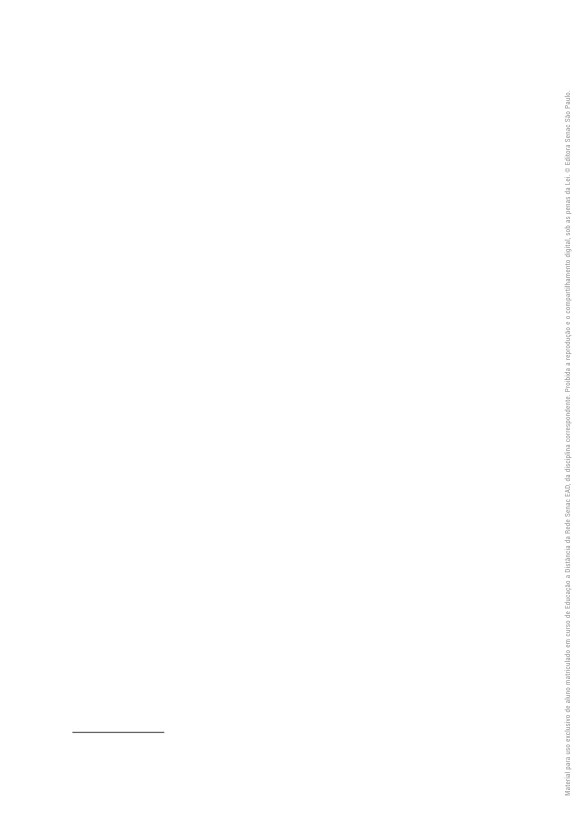
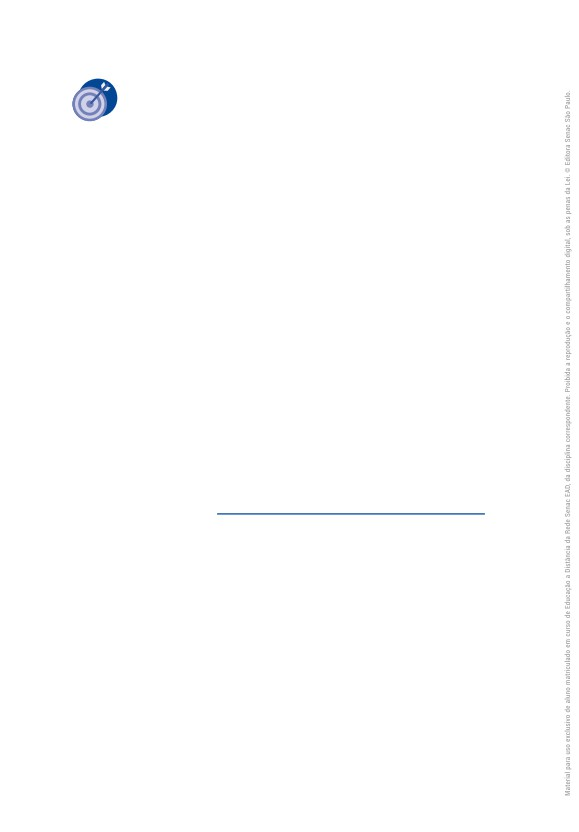
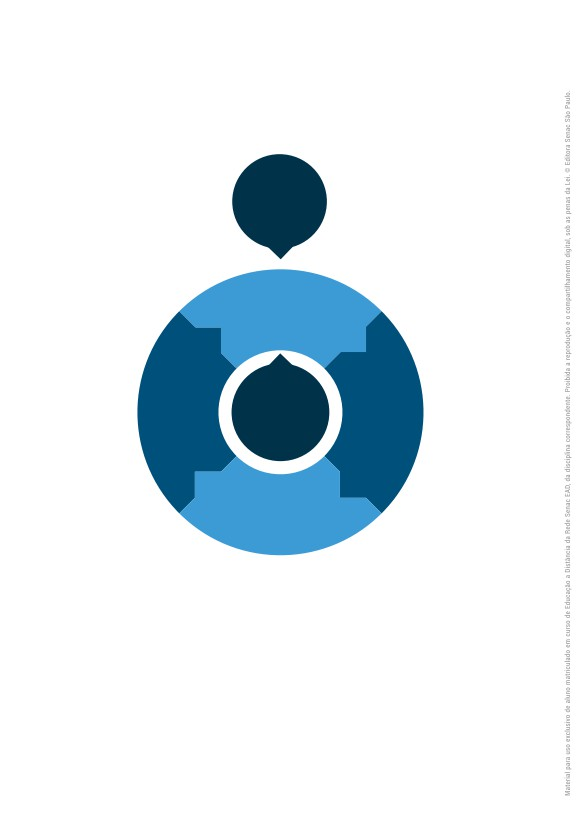
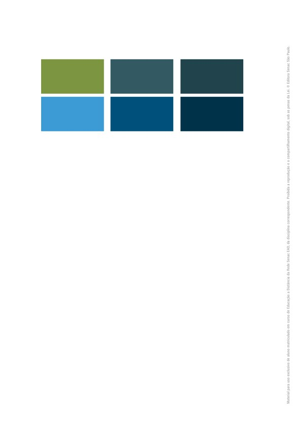

Talita Pagani
Design Thinking
Dados Internacionais de Catalogação na Publicação (CIP)
(Jeane Passos de Souza - CBR 8a/6189)
Pagani, Talita
Design thinking / Talita Pagani. - São Paulo : Editora Senac São
Paulo, 2017. (Série Universitária)
Bibliografia.
e-ISBN 978-85-396-1239-0
1. Design de produtos 2. Design thinking I. Título. II. Série
17-512s
CDD - 658.5752
BISAC DES011000
Índice para catálogo sistemático
1. Design de produtos
658.5752
DESIGN THINKING
Talita Pagani
Administração Regional do Senac no Estado de São Paulo
Presidente do Conselho Regional
Abram Szajman
Diretor do Departamento Regional
Luiz Francisco de A. Salgado
Superintendente Universitário e de Desenvolvimento
Luiz Carlos Dourado
Editora Senac São Paulo
Conselho Editorial
Luiz Francisco de A. Salgado
Luiz Carlos Dourado
Darcio Sayad Maia
Lucila Mara Sbrana Sciotti
Jeane Passos de Souza
Gerente/Publisher
Jeane Passos de Souza (jpassos@sp.senac.br)
Coordenação Editorial/Prospecção
Luis Américo Tousi Botelho (luis.tbotelho@sp.senac.br)
Márcia Cavalheiro Rodrigues de Almeida (mcavalhe@sp.senac.br)
Administrativo
João Almeida Santos (joao.santos@sp.senac.br)
Comercial
Marcos Telmo da Costa (mtcost@sp.senac.br)
Acompanhamento Pedagógico
Ariadiny Carolina Brasileiro Maciel
Designer Educacional
Flaviana Neri
Revisão Técnica
Marcelo Correia dos Santos
Colaboração
Ana Paula Pigossi Papalia
Coordenação de Preparação e Revisão de Texto
Luiza Elena Luchini
Preparação de Texto
Bianca Rocha
Revisão de Texto
Amanda de Lima Lassa
Projeto Gráfico
Alexandre Lemes da Silva
Emília Correa Abreu
Capa
Antonio Carlos De Angelis
Proibida a reprodução sem autorização expressa.
Todos os direitos desta edição reservados à
Editoração Eletrônica
Sandra Regina dos Santos Santana
Editora Senac São Paulo
Valdemir Nunes da Costa
Rua 24 de Maio, 208 - 3o andar
Ilustrações
Centro - CEP 01041-000 - São Paulo - SP
Valdemir Nunes da Costa
Caixa Postal 1120 - CEP 01032-970 - São Paulo - SP
Tel. (11) 2187-4450 - Fax (11) 2187-4486
Imagens
E-mail: editora@sp.senac.br
iStock Photos
E-pub
Ricardo Diana
© Editora Senac São Paulo, 2017
Sumário
Capítulo 5
Capítulo 1
Desenvolvendo e avaliando a
Conhecendo o design thinking, 7
solução: prototipação e teste, 67
1
O que é design, 8
1
Idealizando a solução pelo
Considerações finais, 17
processo de brainstorming, 68
Referências, 18
2
Workshops de cocriação: processo
de design participativo, 71
Capítulo 2
3
Transpondo ideias para soluções
Métodos para solucionar
concretas: o processo de
problemas de inovação, 19
prototipação, 74
4
Avaliando protótipos rápidos, 77
1
O método científico para
identificação de problemas, 20
Considerações finais, 79
2
Design centrado no usuário, 22
Referências, 79
3
A abordagem do design thinking, 25
Considerações finais, 33
Capítulo 6
Onde entra o design thinking, 81
Referências, 34
1
O design thinking no ambiente
Capítulo 3
corporativo, 83
Compreendendo o problema:
2
O design thinking orientando o
imersão, 37
pensamento crítico no ambiente
educacional, 86
1
Pesquisa exploratória, 39
3
O papel social do design thinking, 88
2
Etnografia, 41
Considerações finais, 91
3
Entrevistas estruturadas e
Referências, 91
semiestruturadas, 44
4
Pesquisa desk, 46
Sobre a autora, 95
Considerações finais, 49
Referências, 50
Capítulo 4
Definindo as hipóteses de
solução do problema:
análise e síntese, 53
1
Diagrama de afinidades, 54
2
Cartões de insight, 56
3
Mapas mentais e mapas
conceituais, 57
4
Personas e proto-personas, 59
5
Compreendendo e definindo a
jornada do usuário, 63
Considerações finais, 64
Referências, 65
5
Capítulo 1
Conhecendo o
design thinking
Neste primeiro capítulo, você conhecerá a origem dessa abordagem
que vem sendo muito difundida nas organizações e poderá ter uma vi-
são geral dos principais objetivos do design thinking como método para
a resolução de problemas.
Você já deve ter ouvido falar sobre essa abordagem, principalmente
se atua ou já atuou em empresas de tecnologia da informação.
7
Figura 1 - Design thinking
O que significa o
termo “design”?
Estes são alguns pontos abordados neste capítulo.
Ao final, esperamos que você compreenda como processos de de-
sign são fortes aliados nos processos de negócios e como o design
thinking pode contribuir para identificar necessidades de negócios e au-
xiliar na resolução de problemas.
1 O que é design
Sempre que ouvimos o termo “design”, é comum associarmos a algo
relacionado a aspectos visuais: o design de um produto, o design de um
novo carro, o design de um website, etc. A palavra é geralmente associa-
da com o significado de “desenho”, mas o termo “design” é muito mais
amplo que isso.
Embora “desenho” seja a associação usual para design, um de seus sig-
nificados originais está relacionado a projeto e a projetar coisas. Segundo
o dicionário Merriam-Webster (2016), design significa planejar ou tomar
decisões sobre algo que está sendo criado, bem como planejar, fazer ou
executar um plano para produzir algo para um propósito específico.
Um produto que possui um design inovador está longe de ter somen-
te um bom aspecto visual, embora isso seja importante e faça parte
também do processo de concepção do produto. O design leva ao desen-
volvimento de produtos que possam ser desejáveis às pessoas e que
8
Design thinking
atendam às suas necessidades. Para chegar a esse ponto, é preciso
planejar e pensar em diferentes formas de gerar um produto que agre-
gue valor à vida das pessoas (VIANNA et al., 2012, p. 6-8).
PARA PENSAR
Uma das revoluções que o iPhone trouxe, quando foi anunciado em
2007 por Steve Jobs, está relacionada ao seu design inovador. Embora o
iPhone sempre tenha sido um produto visualmente agradável, será que
foi somente esse fator que o levou a ser adotado em massa?
Pense sobre as novas formas de interação que esse dispositivo trouxe,
aliado a uma interface mais intuitiva e a possibilidade de ser comple-
mentado com aplicativos, sem contar a tela multitoque. Outras empre-
sas já haviam tentado realizar produtos com recursos semelhantes ao
iPhone, mas sem sucesso.
Nos dias de hoje, ele continua a ser uma referência em design. Pense
sobre as facilidades que o iPhone tem, que o faz ser tão desejado pelas
pessoas, gerando consumidores fiéis, e relacione esses aspectos com a
definição de design apresentada anteriormente.
Portanto, quando falamos em design, podemos estar falando em
uma forma estruturada de pensar para conseguir resolver problemas
ou projetar algo em um planejamento. Guarde essa definição, pois ela
será importante para todos os demais capítulos deste livro.
1.1 O design como proposta de solução
Conforme apresentado, o conceito de design está muito mais próxi-
mo de projeto do que de desenho. Projetar é, de certa forma, desenhar,
pois estamos desenhando/traçando uma solução para determinado
problema. O design traz uma percepção mais humana à resolução de
problemas, preocupando-se com os indivíduos antes das ferramentas
para solucionar um problema.
Conhecendo o design thinking
9

O design estabelece novas formas de pensarmos acerca de um
problema, buscando compreender uma série de fatores contextuais de
pensar em uma solução:
••
Quem são os indivíduos a quem estamos atendendo?
••
Quais são suas necessidades e seus desejos?
••
Como eles vivem?
••
Quais são suas experiências pessoais?
Perceba que o design traz uma visão em profundidade sobre as
pessoas, em vez de nos preocuparmos com a quantidade, como,
por exemplo, quantas pessoas têm determinado hábito de consu-
mo ou qual a fatia de mercado que podemos atingir com um novo
produto. Consideramos diferentes aspectos de vida das pessoas
para proporcionar soluções que promovam o bem-estar. (VIANNA
et al., 2012, p. 13)
Atualmente, o design tem sido cada vez mais valorizado nas em-
presas e especialmente nas startups,* as quais geralmente surgem
com a proposta de inovar em algum produto ou serviço para melho-
rar a vida das pessoas. Organizações que estão em busca de inovação
empresarial e que querem romper com modelos tradicionais também
têm encontrado no design um aporte para essa ruptura e geração de
uma cultura de inovação. Além da IDEO, empresa da área de desenho
industrial que popularizou o termo design thinking, outras empresas de
grande porte, como a IBM, têm investido em processo de design como
aliado ao desenvolvimento de novos produtos e à melhoria das estraté-
gias de negócios. Para empresas que desenvolvem produtos e serviços
digitais, o design é um grande agente de transformação e inovação em
negócios.
* Startups são “companhias e empresas que estão no início de suas atividades e que buscam explorar
atividades inovadoras no mercado” (SIGNIFICADOS, 2016).
10
Design thinking
O que significa seguir um processo de design? Significa seguir proce-
dimentos que partem da definição do escopo de um problema, coletar
informações que possam ajudar a solucionar esse problema, passar
por experimentação e teste de diferentes soluções, refinando-as por
meio de feedback até conseguir atingir uma solução eficaz que atenda
às pessoas afetadas pelo problema. Na Figura 2, apresentamos uma
representação do ciclo do processo comum de design. Podemos notar
que esse processo pode ser infinito, ou seja, depois da etapa de melho-
rar as soluções, podemos ter novos inputs para estabelecer de maneira
mais clara o problema.
Figura 2 - O ciclo do processo de design
Definir
o problema
Melhorar
Coletar
o seu projeto
informações
Processo cíclico
de design
Apresentar
Analisar e
ideias para
sintetizar as
coletar feedback
ideias
Desenvolver
um modelo para
teste da solução
Fonte: adaptado de Chicago Architecture Foundation (2016).
Conhecendo o design thinking
11
IMPORTANTE
O design é, atualmente, um fator estratégico para aumentar a condição
inovadora e competitiva nas organizações; é uma disciplina multiface-
tada, colaborativa e que, por isso, envolve todos os colaboradores na
resolução do problema, independentemente de serem designers ou não.
O foco do design está nos indivíduos, não nas técnicas ou nos números.
Ao avançar em seus estudos sobre design, você poderá se depa-
rar com técnicas muito semelhantes às da área de marketing para
identificar as necessidades e os desejos das pessoas. E de fato são.
Entretanto, os objetivos de uma pesquisa guiada por design são dife-
rentes de uma pesquisa de mercado. Mesmo com essas diferenças, o
design e o marketing não são antagônicos, podendo se complementar
para atingir os mesmos objetivos de negócios. No Quadro 1, apresenta-
mos o comparativo entre a pesquisa de design e a pesquisa de mercado
feito por Vianna et al. (2012, p. 15) para elucidar melhor as similaridades
e as diferenças entre as duas abordagens.
Quadro 1 - Comparativo entre pesquisa de design e pesquisa de mercado
PESQUISA DE DESIGN
PESQUISA DE MERCADO
Foco
Nas pessoas.
Nas pessoas.
Pretende entender culturas,
Pretende entender comportamentos
experiências, emoções, pensamentos
a partir do que as pessoas fazem ou
Objetivo
e comportamentos de forma que
dizem que fazem para prever o que
reúna informações para inspirar o
realizariam em uma nova situação e
projeto.
gerar soluções a partir disso.
Por meio da interação entre
Priorizando questionários e
Levantamento
pesquisador e sujeito da pesquisa,
entrevistas estruturadas.
de dados
principalmente a partir de conversas
semiestruturadas.
(cont.)
12
Design thinking
PESQUISA DE DESIGN
PESQUISA DE MERCADO
Representa qualitativamente a
Representa a amostra
amostra e busca por perfis de
estatisticamente, com o objetivo de
usuários extremos, pois o raro e o
entender as respostas das massas,
Amostragem
obscuro nas observações podem
frequentemente ignorando pontos
levar a uma nova e interessante ideia.
fora da curva. A análise dos dados
requer um ponto de vista objetivo,
sendo crítico evitar vieses.
Comportamentos, objetos e palavras
Opiniões e comportamentos das
Tipo de
que as pessoas usam para expressar
pessoas quanto à situação atual ou à
informação
sua relação com as coisas e os
expectativa de contextos futuros.
coletada
processos ao seu redor.
Fonte: Vianna et al. (2012, p. 15).
1.2 O que é design thinking
Nas empresas, ainda lidamos com um raciocínio mais lógico para
os negócios. Esse raciocínio é sistêmico e tem um viés para o estabele-
cimento de evidências precisas para resolver um problema. Entretanto,
em trabalhos com produtos ou serviços que afetam a vida das pesso-
as, nem sempre conseguimos lidar com essa precisão. Pessoas são
movidas a desejos, necessidades e emoções e possuem diferentes ex-
periências de vida. Esses aspectos não são objetivos e estão em cons-
tante modificação. Com isso, as soluções tradicionais de negócios com
base no modelo cartesiano de raciocínio não são responsivas a essas
alterações que afetam a preferência dos consumidores e usuários de
produtos e serviços.
Uma das características mais interessantes da tecnologia é que as
pessoas geralmente acabam utilizando-a de forma diferente da qual ela
foi projetada (CASTELLS, 2003, p. 160). Elas adaptam a tecnologia às
suas necessidades e usam a criatividade para isso. Essa mudança de
comportamento das pessoas dita como seu produto ou serviço evoluirá.
Como sua empresa responderá a essas mudanças?
Conhecendo o design thinking
13

NA PRÁTICA
A rede social Facebook tem dois casos notáveis de como as pessoas
utilizaram seus recursos de forma diferente da qual eles foram projeta-
dos, e isso ditou uma evolução desse serviço:
Hashtags: as pessoas estavam habituadas a utilizar as marcações de
hashtags (categorização de conteúdo precedidas por “#”) em outras re-
des sociais, como Twitter e Instagram, entretanto, o Facebook não pos-
suía suporte a esse recurso. Mesmo assim, as pessoas continuavam
utilizando as hashtags para marcar suas publicações e demandavam a
busca de conteúdos por hashtags. Muitas hashtags também apareciam
porque as pessoas integravam, por exemplo, o Twitter ao Facebook, e
tudo que elas tuitavam aparecia em seus perfis no Facebook. Vendo que
as pessoas se mantinham firmes utilizando as hashtags, o Facebook
resolveu implementar essa funcionalidade, e hoje é possível marcar pu-
blicações e buscar por hashtags.
Reações: há pouco tempo, as pessoas podiam somente “curtir” a pu-
blicação de seus amigos. Curtir nem sempre era a ação mais adequa-
da, principalmente em situações tristes. Algumas pessoas não sabiam
como reagir e acabavam curtindo uma publicação, mas com a intenção
de representar apoio a um amigo. Percebendo como isso muitas ve-
zes causava desconforto às pessoas (quem publicava e quem curtia),
o Facebook fez um estudo de design que gerou as reações que agora
acompanham a opção de curtir.
O design thinking traz uma abordagem diferenciada de inovação
guiada pelo design (VIANNA et al., 2012, p. 12-14) e centrada no ser hu-
mano, justamente para a exploração de um espaço de soluções mais
amplo, acomodando a criatividade, a colaboração e a cocriação nesse
processo. O CEO da IDEO, Tim Brown, define o design thinking como:
[...] uma abordagem que utiliza a amplitude de pensamento do
designer e métodos para resolução de problemas, para atender
às necessidades das pessoas de um modo tecnologicamente vi-
ável e comercialmente viável. Em outras palavras, o pensamento
centrado no ser humano é a inovação. (BROWN, 2010, p. 16)
14
Design thinking
No design thinking, temos uma visão holística para a inovação
através de um processo em que especialistas de diferentes áreas
trabalham em conjunto para entender as necessidades de con-
sumidores, funcionários, fornecedores e quaisquer outras partes
interessadas de um produto ou serviço, cocriando e prototipan-
do as soluções com estas partes interessadas. (VIANNA et al.,
2012, p. 13).
No design thinking, em vez do pensamento voltado exclusivamente
ao raciocínio lógico, trazemos o raciocínio abdutivo do design para o
meio empresarial.
Figura 3 - Comparação entre o raciocínio lógico e o raciocínio abdutivo
MÉTODO LÓGICO
MÉTODO ABDUTIVO
Problema
Solução
Problema
Solução
x
y
x
y
m
n
m
n
a
b
a
b
Podemos perceber que o foco do design thinking são as pessoas,
não o produto a ser desenvolvido. O produto está a serviço das pes-
soas e de suas necessidades. Mas, antes de pensar nos requisitos do
produto, precisamos entender as pessoas e como podemos gerar boas
soluções que proporcionem bem-estar a elas no contexto de suas ne-
cessidades e seus desejos.
Conhecendo o design thinking
15
PARA SABER MAIS
Deep Dive da IDEO
A IDEO é uma empresa de design de produtos que ajudou a popula-
rizar o termo “design thinking”, embora ela não seja a criadora desse
processo, como muitos acreditam. Em 1999, a empresa abriu suas
portas para a emissora de televisão ABC a fim de mostrar como era
seu processo de criação de um produto inovador. Eles não referen-
ciaram esse processo como design thinking, mas sim como Deep
Dive, “mergulho profundo” (em tradução literal), fazendo alusão à
forma de imersão profunda que eles utilizavam durante o processo.
Na reportagem, a IDEO aceita o desafio da ABC de inovar e reprojetar
em apenas cinco dias um produto bem conhecido e utilizado pelas
pessoas: um carrinho de compras de supermercado. O processo de
Deep Dive da IDEO é o processo de design thinking, ainda que o con-
ceito não fosse tão popular à época.
Por fim, é importante entender os três pilares essenciais que susten-
tam todo o processo de design thinking: empatia, colaboração e experi-
mentação. Esses três conceitos são centrados nas pessoas e nas suas
necessidades, possibilitando que os fatores humanos estejam em foco
como protagonistas durante todo o processo. Na Figura 4, apresenta-
mos os pontos-chave de cada um desses conceitos.
16
Design thinking
Figura 4 - Os pilares do design thinking
EMPATIA
COLABORAÇÃO
EXPERIMENTAÇÃO
• Capacidade de se colocar no
• Integração de times
• Colocar as soluções para
lugar de outra pessoa.
multidisciplinares e
serem avaliadas no mundo
multifuncionais.
real.
• Compreender o contexto da
outra pessoa com base no
• Trazer os usuários/
• Aprender com os
ponto de vista dela.
consumidores para o
feedbacks de usuários ou
processo, a fim de cocriar o
consumidores.
• Compreender melhor
produto ou serviço.
a experiência das
• Entender como a solução
pessoas, bem como suas
• Processo de
funcionará na prática.
necessidades, seus desejos
desenvolvimento mais
• Utilizar esse aprendizado
e seus medos.
rico pela diversidade
para refinar o produto ou
• Base do design thinking.
de experiências e
serviço.
especialidades.
Fonte: adaptado de Agni (2015), Vianna et al. (2012), Pinheiro (2011) e Brown (2010).
Considerações finais
Neste capítulo, apresentamos o conceito de design como uma for-
ma de pensar acerca de problemas e soluções. Para o âmbito empre-
sarial, o modo de pensar do design (e do designer) como base para a
inovação foi denominado de design thinking.
Vimos que o design thinking tem como objetivo resolver um proble-
ma analisando diversos ângulos e perspectivas. Ele transpõe métodos
e processos já conhecidos por designers para buscar soluções inovado-
ras, conforme veremos nos próximos capítulos.
Conhecendo o design thinking
17
A abordagem do design thinking traz um novo jeito de pensar e tra-
tar problemas complexos, colocando as pessoas no centro do desen-
volvimento. Nessa abordagem, os designers “produzem soluções que
geram novos significados e estimulam os diversos aspectos (cognitivo,
emocional e sensorial) envolvidos na experiência humana” (VIANNA et
al., 2012, p. 15).
É importante ressaltar que, neste livro, apesar de tratarmos do de-
sign thinking como um processo aplicado para a inovação tecnológica,
essa abordagem pode ser utilizada para resolver problemas complexos
em diferentes contextos, seja na vida pessoal, em uma sala de aula, etc.
Referências
AGNI, E. Os três pilares do design thinking. UX Design, 2015. Disponível em:
2016.
BROWN, T. Design thinking: uma metodologia poderosa para decretar o fim das
velhas ideias. Rio de Janeiro: Elsevier, 2010.
CASTELLS, M. A galáxia da internet: reflexões sobre a internet, os negócios e a
sociedade. Rio de Janeiro: Jorge Zahar, 2003.
CHICAGO ARCHITECTURE FOUNDATION. Discover Design Handbook.
Discover Design,
2016. Disponível em:
process>. Acesso em: 15 set. 2016.
MERRIAM-WEBSTER. Definition of design. 2016. Disponível em: <http://www.
merriam-webster.com/dictionary/design>. Acesso em: 15 set. 2016.
PINHEIRO, T. Design thinking Brasil. Rio de Janeiro: Elsevier, 2011.
ficados.com.br/startup/>. Acesso em: 15 set. 2016.
VIANNA, M. et al. Design thinking: inovação em negócios. São Paulo: MJV,
2012.
18
Design thinking
Capítulo 2
Métodos para
solucionar
problemas
de inovação
No capítulo anterior, apresentamos como o design traz uma aborda-
gem diferenciada para lidar com a resolução de problemas e chegar a
resultados inovadores. O pensamento orientado a design, como diferen-
cial estratégico, considera fortemente os fatores humanos por trás do
uso de um determinado produto ou serviço; afinal, as coisas são proje-
tadas para pessoas. O design thinking estruturou esse modo de pensar
em um processo baseado na empatia, colaboração e experimentação,
levando às organizações uma nova forma de pensar o desenvolvimento
de soluções para seus clientes.
Mas o design thinking não é a única abordagem para a resolução de
problemas. Seja na área acadêmica ou na indústria, é possível encontrar
19
diferentes modos de abordar um problema e estabelecer soluções rela-
cionadas à inovação tecnológica, como o método científico e o design
centrado no usuário. Quais seriam as diferenças entre essas aborda-
gens e o design thinking? Seria possível haver similaridades? É o que
veremos neste capítulo.
Ao final, esperamos que você consiga distinguir as características de
cada uma dessas abordagens para resolução de problemas e também
possa estabelecer as semelhanças entre elas, de forma a ter o conheci-
mento de quais são as melhores situações para utilizar cada abordagem.
1 O método científico para identificação de
problemas
Conforme mencionado no capítulo anterior, as empresas ainda utili-
zam um método mais sistêmico e indutivo para a resolução de proble-
mas. Quando lidamos com executivos ou analistas, frequentemente é
preciso demonstrar que X soluções geraram Y resultados, ou que se
realizarmos A, teremos diretamente um impacto B no uso de um pro-
duto. Pensa-se em uma relação de causa e efeito e em interferências
diretas entre ações e resultados.
Figura 1 - Causa e efeito e interferências diretas entre ações e resultados
CAUSA
EFEITO
X
Y
=
soluções
resultados
OU
AÇÕES
RESULTADOS
Ação
Impacto
=
A
B
Esse pensamento é uma herança do método científico, o qual ge-
ralmente é um processo mais sistemático e analítico para a resolução
20
Design thinking
de problemas, considerando que o objetivo é chegar a um resultado
confiável, sem falhas. Para tanto, é preciso realizar um processo for-
mal e seguir passos sistêmicos para comprovar que os resultados são
verdadeiros.
No método científico empírico, há preocupação com a resolução de
problemas de forma objetiva, buscando estabelecer como um fator X
resulta em um efeito Y. O X seria o problema a ser resolvido; então, esta-
belecemos uma ou mais hipóteses para resolver esse problema. Essas
hipóteses são exploradas e validadas para comprovar se geram o efeito
Y ou não.
Figura 2 - Fator e efeito
FATOR X
PROBLEMA
EFEITO Y
RESULTADO
Apesar de ter alguns elementos em comum com o design thinking,
como a experimentação, o método científico de resolução de proble-
mas requer um problema altamente definido, que se concentra em for-
necer uma única solução (INTERACTION DESIGN FOUNDATION, 2016).
As experimentações realizadas são mais controladas, e o processo se-
gue um rigor científico para que seja mais racional e neutro em seus
resultados. O método científico contempla as seguintes etapas:
Figura 3 - O processo de resolução de problemas do método científico
Aceitar ou
rejeitar as
Realizar
hipóteses e
experimentos
Estabelecer
estabelecer
controlados
hipótese
conclusões
Formulação
sobre as
de um
hipóteses
Observação
problema
Métodos para solucionar problemas de inovação
21
Uma das principais características do método científico é que ele
não admite falhas. Embora possa ser aprendido com resultados negati-
vos que refutem uma hipótese, o desejável é confirmar de forma precisa
e sem margem para ambiguidades as hipóteses formuladas. Por isso,
são usados métodos rígidos de controle para a validação das hipóteses
nos experimentos.
O objetivo do método científico é produzir novos conhecimentos ou
complementar o conhecimento existente acerca de determinado fenô-
meno. Sem as pesquisas desenvolvidas com base no método científico,
não teríamos várias das tecnologias atuais, nem a cura para diversas
doenças e medicamentos, e desconheceríamos as causas de diversos
fenômenos naturais.
O método científico trabalha também para apoiar as empresas na
produção de novas tecnologias e tem sido utilizado nos departamen-
tos de pesquisa e desenvolvimento (P&D) desde a década de 1980.
Empresas como a Microsoft e a IBM contam com departamentos dedi-
cados exclusivamente a pesquisas científicas para a criação de tecno-
logias inovadoras. O método científico também permite chegar à inova-
ção, mas utilizando uma abordagem mais analítica e sistêmica para tal.
2 Design centrado no usuário
O design centrado no usuário (DCU) é um processo iterativo de de-
sign que tem foco nas necessidades dos usuários, considerando como
eles realizam determinada tarefa ou atividade, preconizando também
uma análise dos requisitos gerais do projeto e a realização de testes e
avaliações das soluções de design propostas em estágios iniciais do
desenvolvimento (RITTER; BAXTER; CHURCHILL, 2014, p. 43).
O conceito do DCU surgiu em meados da década de 1980 e foi am-
plamente difundido pelo professor, pesquisador e design thinker Donald
Norman em seu livro The design of everyday things (NORMAN, 2013).
Esse processo surgiu a partir da necessidade de compreender e envol-
ver as pessoas no desenvolvimento de produtos e serviços, uma vez
22
Design thinking
que o pensamento mais analítico e sistêmico considerava pouco os as-
pectos humanos nos processos tradicionais.
De acordo com Norman (2013, p. 8), o DCU se caracteriza como
“uma abordagem que coloca as necessidades, capacidades e compor-
tamentos humanos em primeiro lugar e, em seguida, projeta para aco-
modar essas necessidades, capacidades e modos de comportamento”.
Como um processo, o DCU é composto das seguintes etapas, a se-
rem repetidas até que se obtenha sucesso na resolução do problema
(PEGASUS, 2014):
Figura 4 - Etapas do DCU
1
Identificar as necessidades
• Compreender o escopo do problema.
2
Especificar o contexto de uso
• Analisar o público-alvo por meio de observação, questionamento e
interação a fim de entender suas necessidades.
3
Especificar os requisitos
• Definir os requisitos de usuário para as necessidades de uma nova
ferramenta, produto ou serviço.
4
Produzir soluções de design
• Idealizar e criar as soluções que atendem aos requisitos.
5
Prototipar e testar
• Desenvolver protótipos da solução e realizar testes de forma iterativa
até que haja uma solução satisfatória para o problema.
Métodos para solucionar problemas de inovação
23

Na Figura 5, apresentamos o processo cíclico e iterativo do DCU.
Figura 5 - O processo do DCU
Identificar as
necessidades
Especificar o
contexto de uso
O sistema
Avaliar as
Especificar
satisfaz com
soluções
requisitos
sucesso os
requisitos
Produzir soluções
de design
Fonte: adaptado de Pegasus (2014).
O DCU é uma das bases do design thinking, que surgiu para expandir
o DCU e resolver algumas de suas lacunas. O DCU tem como limita-
ção justamente o foco exclusivo no usuário: ao considerar somente as
necessidades das pessoas que são os usuários finais de um produto
ou serviço, pode-se gerar soluções com um design demasiadamente
complexo para tentar atender a todos os usuários (NORMAN, 2005).
Essa complexidade pode não ser viável do ponto de vista técnico e de
24
Design thinking
negócios; portanto, é preciso considerar as necessidades de todas as
partes interessadas do projeto.
O DCU é apropriado para inovações incrementais, mas não para ino-
vações radicais (NORMAN, 2013, p. xvii). As inovações incrementais
seriam modificações e melhorias em um produto ou serviço existen-
te, enquanto as inovações radicais são voltadas à criação de algo que
apresente uma solução diferenciada de outras existentes. Inovações
radicais podem partir de um desafio ou problema complexo observado
e precisam considerar múltiplos pontos de vista durante o desenvolvi-
mento, e é nesse ponto que entra o design thinking.
3 A abordagem do design thinking
Conforme mencionado no Capítulo 1, o design thinking é uma abor-
dagem que traz a forma de pensar do design para dentro das empresas
de modo mais concreto, por meio de processos, técnicas e ferramentas.
Como forma de resolução de problemas, o design thinking é uma
abordagem irrestrita na qual é possível que o designer (ou a equipe de
projeto) trabalhe em diferentes soluções possíveis ao mesmo tempo.
Ele permite que os designers considerem o problema de muitas manei-
ras diferentes, especulando sobre seu passado e futuro (VIANNA et al.,
2012, p. 12-14).
Assim, o design thinking permite não apenas resolver um problema,
mas também entendê-lo em profundidade e em seu entorno. Abordando
o problema de forma exploratória, buscamos entender o desconhecido,
descobrir coisas novas e buscar informações mais qualitativas do que
quantitativas para explicar um fenômeno observado. Isso permite en-
xergar o problema de outros ângulos e compreender fatores não tão
explícitos que poderiam não ser descobertos sem uma exploração mais
livre do espaço do problema (BROWN, 2010, p. 16-21).
Métodos para solucionar problemas de inovação
25
Nos outros métodos, a saída do problema é uma solução objetiva
para um problema específico, enquanto que, no design thinking, a saída
do processo pode ser algo totalmente novo para endereçar uma possí-
vel solução do problema.
Embora o design thinking possa ser aplicado em qualquer proces-
so de resolução de problemas, ele é comumente utilizado como uma
abordagem para inovar determinado produto ou serviço, tendo o olhar
sobre os negócios e sobre as pessoas como um de seus pilares. No
design thinking, há a preocupação também com a viabilidade técnica de
uma solução. O design thinking, enquanto um processo para se atingir
a inovação em negócios, reúne o que as pessoas desejam com o que é
econômica e tecnologicamente viável.
Figura 6 - Pilares da inovação
Desejável
Viável
(pessoas)
(negócios)
Viável
(tecnologia)
Inovação
Fonte: adaptado de Stanford (2016) e IDEO (2016).
Temos, então, no design thinking, uma abordagem que não se baseia
somente em estatísticas e análises numéricas. Tenta-se entender as
pessoas por trás de uma interação com determinado produto ou servi-
ço. É preciso entender o que gera impacto para as pessoas e o que elas
desejam. Com isso, o design thinking é pautado nos seguintes princípios:
26
Design thinking
Figura 7 - Princípios do design thinking
Ambiguidade: o
design thinking
conserva e abraça
a ambiguidade.
Redesign: todos
os processos de
design são, na
verdade, redesign
dos processos
já existentes.
Fonte: adaptado de Interaction Design Foundation (2016) e Plattner, Meinel e Leifer (2011).
3.1 As etapas do design thinking
A abordagem do design thinking visa responder aos seguintes
questionamentos:
Figura 8 - Questionamentos da abordagem do design thinking
?
Para quem?
Para quem estamos resolvendo esse problema?
Quais?
Quais são as necessidades dessas pessoas?
Como?
Como esse problema será resolvido?
Por quê?
Por que esse trabalho ou essa solução importa para as pessoas?
Fonte: adaptado de EQUICHEM (2016).
Métodos para solucionar problemas de inovação
27
Esses questionamentos são estruturados em um modelo deno-
minado “diamante duplo”, no qual o design thinking parte da etapa
de descoberta que expande (diverge) as opções e, então, fazemos
escolhas (convergimos) sobre o que foi observado para descobrir
o problema, abrindo novamente o leque de opções no desenvolvi-
mento para sintetizar os resultados na entrega. São dois momentos
distintos de análise e síntese do processo: durante a definição do
problema e durante o desenvolvimento das soluções que visam aten-
der ao problema identificado.
Figura 9 - O diamante duplo do design thinking
DESCOBRIR
DEFINIR
DESENVOLVER
ENTREGAR
Fonte: adaptado de Turunen (2014).
O diamante duplo é a base para entender o contexto do problema,
criar soluções alternativas e entregar as soluções mais adequadas às
necessidades das pessoas. Esse processo é geralmente dividido em
cinco etapas, conforme descrito a seguir.
28
Design thinking
3.1.1 Descoberta: imersão (ou empatia ou exploração)
É o momento em que deve ser realizada uma imersão na realidade
para compreender as necessidades, os desejos e os objetivos das pes-
soas. Em alguns materiais, esta etapa é denominada “empatia”, pois seu
principal objetivo é colocar-se no lugar das pessoas e entender suas
necessidades a partir de seus próprios pontos de vista, considerando
histórico de vida, contexto social, geográfico, cultural, etc. Nesta etapa,
o designer se aproxima do contexto do problema (VIANNA et al., 2012,
p. 21-23).
3.1.2 Definição: análise e síntese (ou definição do problema)
Entendendo o contexto das pessoas, são estabelecidos os proble-
mas a serem solucionados dentro da necessidade identificada. Nesta
etapa, todas as informações coletadas devem ser organizadas e anali-
sadas para sintetizar os principais problemas identificados. A organiza-
ção e a síntese das informações são realizadas entre todo o time multi-
disciplinar (VIANNA et al., 2012, p. 65).
3.1.3 Desenvolvimento: ideação
Nesta etapa, são criadas diferentes alternativas para solucionar o
problema. Essa é a parte em que o time pode trabalhar de forma criativa
para idealizar as soluções, e geralmente são utilizadas técnicas como
brainstorming, abordagem de design participativo e workshops de co-
criação (VIANNA et al., 2012, p. 99-100), que serão melhor explorados
nos próximos capítulos.
3.1.4 Entrega: prototipação (ou prototipagem)
A prototipação é a etapa em que as soluções são desenvolvidas e co-
locadas em prática para que possam ser avaliadas no mundo real. Um
Métodos para solucionar problemas de inovação
29
protótipo pode ser as telas de um aplicativo desenhadas em papel, uma
versão simplificada de um aplicativo que não está plenamente funcional
e apenas simula algumas funcionalidades, uma maquete, entre outros.
O importante é entregar algum recurso que represente uma solução e
que possa ser utilizado para validação na etapa seguinte (VIANNA et al.,
2012, p. 121-125).
3.1.5 Entrega: avaliação (ou experimentação)
Na última etapa do ciclo, um ou mais protótipos são avaliados em
um cenário real de uso com as pessoas. É nesse momento que são
coletadas informações valiosas sobre a possível receptividade das pes-
soas ao produto ou serviço, se conseguiram entender como o protótipo
funciona, quais as falhas que ele apresenta e se atende às necessida-
des delas. Falhas são inevitáveis e são vistas como lições aprendidas
que ajudarão a refinar a solução para o problema (VIANNA et al., 2012,
p. 121-125).
3.2 Comparação com outros métodos de resolução de
problemas
Um diferencial com relação às outras formas de resolução de pro-
blemas abordadas neste capítulo é a iteração entre o processo; ou
seja, após a avaliação, podemos utilizar os resultados obtidos para
começar um novo ciclo a partir da imersão, tornando o processo repe-
tível por n vezes até refinarmos a solução a um nível adequado. Assim,
esse processo cíclico permite gerar produtos melhores e lidar com
as falhas no processo; afinal, elas são aprendizados utilizados como
input para um novo ciclo. Assim, é possível sair de um cenário de in-
certezas para um cenário de clareza.
30
Design thinking
Figura 10 - O rabisco sobre os caminhos do design (The Design Squiggle)
Fonte: Newman (2010).
Uma diferença entre o design thinking e o método científico é que o
design thinking encoraja as pessoas a explorarem soluções alternativas
sem medo de falhar, considerando que a falha permite o aprendizado
para refinar as ideias. Além disso, o design thinking não parte de hipó-
teses que precisam ser provadas, mas de alternativas que precisam ser
colocadas à prova em um cenário real para que, assim, possam ser me-
lhor compreendidas e até mesmo gerar novas ideias.
O design thinking também pode ser utilizado para descobrir novas
possibilidades de negócios e inovação, antes mesmo de se identificar
um problema. Há a flexibilidade de usá-lo como uma abordagem de ex-
ploração e descoberta sobre como as pessoas usam determinado pro-
duto ou serviço. Como já abordado, o DCU é o processo de design mais
utilizado para inovações incrementais, servindo também como base
para o design thinking.
Em contrapartida, a diferença com o método científico é que o de-
sign thinking tem como princípio a colaboração entre times multidisci-
plinares, com diferentes formações e áreas de especialidade, nos quais
todos podem colaborar com ideias para solucionar o problema. No mé-
todo científico, geralmente há equipes de pesquisa mais homogêneas,
embora isso varie de acordo com a área de pesquisa, especialmente se
estiver relacionada ao design.
Métodos para solucionar problemas de inovação
31
Um ponto em comum entre o design thinking, o método científico
e o design centrado no usuário é a experimentação: só conseguimos
saber se o objeto analisado está compatível com a realidade se testar-
mos as soluções propostas. No design thinking e no design centrado no
usuário (DCU), esse teste é focado nas pessoas que serão impactadas
pela solução e em compreender as soluções que se adéquam às suas
necessidades.
A similaridade do design thinking com o método científico é o ques-
tionamento da realidade e a experimentação para coletar resultados. A
diferença está na forma de realizar a coleta de informações, a experi-
mentação e a análise dos resultados.
O design thinking tem muitas similaridades com o DCU: ambos são
orientados a pessoas (PEGASUS, 2014). Entretanto, o design thinking,
enquanto abordagem, expande o DCU e traz mais que um processo,
sendo uma forma de pensar a solução de problemas de inovação consi-
derando não apenas a visão do usuário, mas também as necessidades
de negócios e a viabilidade técnica. O design thinking é composto de
um conjunto de métodos, técnicas, ferramentas e processos, incluindo
o DCU. Assim, podemos considerar que o processo de DCU está contido
no design thinking.
Figura 11 - Relação do design thinking com o DCU
Design thinking
Design
centrado no
usuário
(DCU)
32
Design thinking
Mesmo com objetivos diferentes, esses métodos não são mutua-
mente exclusivos. Cada abordagem permite explorar o problema de
uma forma diferente e a partir de um escopo distinto. Essas abordagens
não se sobrepõem e podem até mesmo ser utilizadas em conjunto.
Considerações finais
Neste capítulo, você pôde conhecer um pouco mais sobre três méto-
dos de resolução de problemas: o método científico, o design centrado
no usuário (DCU) e o design thinking. É possível perceber similarida-
des e diferenças entre cada um dos métodos. O método científico, por
exemplo, preocupa-se com provas formais acerca de um fenômeno, en-
quanto o design thinking procura descobrir e entender melhor como e
por que um fenômeno ocorre e como ele impacta as pessoas.
Cada uma dessas abordagens tem um propósito específico e uma
não descarta a outra. Existem pontos de limitação em cada uma que
podem ser supridos por outro método, assim como também há pon-
tos de convergência.
No entanto, quando falamos em gerar resultados inovadores, o
design thinking tem se sobressaído, pois propõe uma forma de abordar
problemas que considera o ser humano no centro do processo, situando
a solução dentro de uma viabilidade tecnológica e econômica. O design
thinking teve suas origens no design centrado no usuário (DCU) e tem
elementos comuns com o método científico, mas há o foco em gerar
inovação em produtos e serviços.
Vimos que o processo de design thinking é composto de cinco eta-
pas: imersão, análise e síntese, ideação, prototipação e avaliação. Cada
etapa tem suas técnicas e ferramentas para apoiar as respectivas ati-
vidades. No próximo capítulo, abordaremos algumas técnicas para a
etapa de imersão.
Métodos para solucionar problemas de inovação
33
Referências
BROWN, T. Design thinking: uma metodologia poderosa para decretar o fim das
velhas ideias. Rio de Janeiro: Elsevier, 2010.
EQUICHEM. Design thinking and product development. 2016. Disponível em:
Acesso em: 13 out. 2016.
GARLAND JR., T. The scientific method as an ongoing process. 2015.
html5.html>. Acesso em: 13 out. 2016.
IDEO. About IDEO.
2016. Disponível em:
Acesso em: 13 out. 2016.
INTERACTION DESIGN FOUNDATION. Design thinking, essential problem
solving 101 - it’s more than scientific. 2016. Disponível em: <https://www.
interaction-design.org/literature/article/design-thinking-essential-problem-
solving-101-it-s-more-than-scientific>. Acesso em: 13 out. 2016.
NEWMAN, D. The Squiggle of Design. Cargo Collective, 2010. Disponível em:
2016.
NORMAN, D. Human-centered design considered harmful. 2005. Disponível
out. 2016.
_________. The design of everyday things: revised and expanded edition. New
York: Basic Books, 2013.
PEGASUS. Design thinking or user centred design? Same? World Usability
Congress,
2014. Disponível em:
design-thinking-a-new-way-for-a-user-centred-design-process/>. Acesso em:
13 out. 2016.
PINHEIRO, T. Design thinking Brasil. Rio de Janeiro: Elsevier, 2011.
34
Design thinking
PLATTNER, H.; MEINEL, C.; LEIFER, L. (Eds.). Design thinking: understand,
improve, apply. Understanding innovation. Berlin/Heidelberg: Springer-Verlag,
2011. p. xiv-xvi.
RITTER, F. E.; BAXTER, G. D.; CHURCHILL, E. F. Foundations for designing user-
centered systems: what system designers need to know about people. London:
Springer-Verlog, 2014.
TURUNEN, S. Transform your business through design thinking. 2014.
Disponível em:
through-design-thinking/>. Acesso em: 13 out. 2016.
VIANNA, M. et al. Design thinking: inovação em negócios. São Paulo: MJV,
2012.
Métodos para solucionar problemas de inovação
35
Capítulo 3
Compreendendo o
problema: imersão
Agora que você já conhece alguns princípios e etapas do design
thinking, vamos explorar alguns métodos, técnicas e ferramentas de
cada etapa do processo.
A primeira etapa é a imersão, na qual é feita uma pesquisa aprofun
dada sobre os usuários em potencial do produto ou serviço e do con
texto que os cercam em múltiplos aspectos (social, econômico, geo
gráfico, cultural, etc.). É uma fase de descoberta e exploração, na qual
serão coletados vários dados que ajudam a compreender os desejos,
as necessidades, as “dores” e os hábitos desses usuários. A imersão
pretende ser, de fato, um “mergulho” na realidade das pessoas para que
37
possamos entender suas necessidades sob seus próprios pontos de
vista, exercitando a empatia.
Uma vez que o design thinking é centrado no ser humano, uma
imersão bem conduzida é fundamental para que sejam coletadas in
formações que direcionem adequadamente à solução do problema nas
etapas seguintes. Na etapa de síntese, essas informações originam re
quisitos de usuário para o produto ou serviço que será desenvolvido.
Para essa fase de imersão, há diversas abordagens de pesquisas
com usuários, divididas entre pesquisa primária e pesquisa secundária.
Figura 1 - Classificação dos métodos de pesquisa com usuário
Pesquisa primária
Pesquisa secundária
Realizada diretamente com os
Realizada em materiais
usuários, clientes e demais
publicados por terceiros, como
partes interessadas. Parte de
relatórios, artigos de jornais,
observações do mundo real.
livros, etc.
Fonte: Vianna et al. (2012, p. 32).
Pesquisas primárias e secundárias podem ser classificadas também
como pesquisas diretas e indiretas com usuários, respectivamente. As
pesquisas diretas são aquelas em que há contato com as pessoas,
pessoal ou remotamente, como entrevistas, questionários, pesquisa
exploratória, etnografia, grupos de foco, entre outros. Já as pesquisas
indiretas são aquelas em que as informações sobre os usuários são
levantadas de forma indireta, como a pesquisa desk e a consulta à opi
nião especializada de outros profissionais sobre os possíveis perfis de
usuários.
38
Design thinking
Entre esses tipos de pesquisa, é possível estabelecer ainda um nível
de formalidade, tendo as pesquisas formais uma estrutura mais rigoro
sa e as informais, um formato mais aberto, permitindo uma exploração
livre sobre o assunto. Relacionamos algumas dessas abordagens no
Quadro 1.
Quadro 1 - Classificação dos tipos de pesquisa com usuários
PESQUISA DIRETA
PESQUISA INDIRETA
• Entrevistas estruturadas
• Pesquisa desk
Formal
• Questionários
• Entrevistas
• Opinião especializada
semiestruturadas
• Pesquisa exploratória em
• Entrevistas contextuais
dados de redes sociais
Informal
(comentários, opiniões,
• Pesquisa exploratória
reações, etc.)
• Etnografia
• Grupos de foco
Fonte: adaptado de Vianna et al. (2012), Brown (2010), Pinheiro (2011) e Lowdermilk (2013).
Neste capítulo, iremos explorar quatro abordagens de pesquisa para
a imersão na realidade dos usuários: pesquisa exploratória, etnografia,
entrevistas e pesquisa desk.
Ao final, você compreenderá como aplicar cada uma dessas aborda
gens na prática e terá embasamento para decidir quais podem ser mais
adequadas e viáveis a serem aplicadas conforme o contexto, seja na
área acadêmica ou profissional.
1 Pesquisa exploratória
A pesquisa exploratória é uma pesquisa de campo preliminar de
cunho qualitativo que permite à equipe do projeto entender o com
portamento das pessoas, identificar padrões de interação e coletar
Compreendendo o problema: imersão
39
informações que ajudem a compor o perfil dos usuários a partir de um
cenário real de uso. Essa técnica ajuda a equipe a compreender melhor
o problema, quem são os usuários, como eles são afetados pelo pro
blema que estamos tentando solucionar e quais os possíveis requisitos
que podemos extrair do projeto (VIANNA et al., 2012).
Por meio da pesquisa exploratória, os membros da equipe de
desenvolvimento do produto ou serviço conseguem se familiarizar com
a realidade dos usuários, o que permite gerar maior empatia e ter aces
so a informações mais precisas sobre as necessidades deles.
Figura 2 - Características da pesquisa exploratória
É baseada na observação da realidade.
Permite identificar necessidades, desafios, oportunidades
e problemas em um cenário real e não hipotético de uso.
Permite coletar informações tácitas e latentes que muitas
vezes não seriam expressas pelos usuários.
Pode ser feita por todos os membros da equipe. A
execução desse tipo de pesquisa consiste em sair às ruas
interagindo e observando pessoas realizando atividades
dentro do contexto do projeto.
Fonte: adaptado de Vianna et al. (2012, p. 28), Lowdermilk (2013, p. 125-127).
40
Design thinking
Conversar diretamente com os usuários em um cenário real permite
identificar requisitos que não havíamos considerado previamente, pois
o que pode parecer relevante para os designers e desenvolvedores pode
não ser de fato importante para as pessoas que irão utilizar a solução
(LOWDERMILK, 2013).
PARA SABER MAIS
Na seção “Para Saber Mais” sobre o processo de Deep Dive da IDEO,
apresentada no Capítulo 1 (p. 16), você pode conferir um exemplo de
pesquisa exploratória que tende também para um estudo etnográfico.
Conforme visto nesse processo, a equipe do projeto precisa reprojetar
um carrinho de compras e, para isso, vai a campo nos supermercados,
conversa com as pessoas que estão fazendo as compras e também
testa os carrinhos. Dessa forma, a equipe consegue compreender as
necessidades, dificuldades e oportunidades de inovação com base no
uso real que as pessoas fazem desse produto.
2 Etnografia
A etnografia também é uma pesquisa de campo exploratória, porém,
mais aprofundada. Em pesquisas exploratórias de imersão em profun
didade, empreende-se mais tempo para coletar as informações dos
usuários e entender não somente o seu comportamento, mas também
como se sentem, o que pensam (VIANNA et al., 2012), como lidam com
as situações adversas ao usar o produto ou serviço e como contornam
o problema.
Compreendendo o problema: imersão
41
PARA SABER MAIS
O termo “etnografia” significa, do ponto de vista da sociologia e da
antropologia, a ciência social que descreve e classifica raças e cultu-
ras. A etimologia da palavra vem dos seguintes termos: ethno - raça,
cultura; graphy - estudo (HARPER, 2016).
Na área de experiência do usuário (user experience - UX), consi-
deramos a etnografia como uma pesquisa qualitativa que foca na
observação detalhada de pessoas em ambientes naturais (RAN-
DALL; ROUNCEFIELD, 2016).
Em alguns casos, o designer pode passar alguns dias “vivendo” o
problema do usuário ou vivendo como os usuários para ter uma com
preensão mais acurada da realidade deles. Por exemplo, para entender
como é a experiência de uso de um jogo multiusuário de realidade au
mentada que deve ser jogado ao ar livre, você pode instalar esse jogo
em seu dispositivo, sair às ruas para utilizá-lo e interagir com os outros
usuários como um jogador real por alguns dias.
Tal exemplo corrobora um dos pilares do design thinking que é a em
patia, ou seja, a capacidade de se colocar no lugar de outra pessoa e
sentir o que ela sente. Assim, podemos dizer que a etnografia é uma téc
nica que permite colocar em prática o princípio da empatia (MOURTHÉ,
2015).
A intenção da etnografia é acompanhar de perto os usuários em ati
vidades cotidianas no ambiente natural em que realizam suas ativida
des para entender melhor essas pessoas e o ambiente social em que
estão inseridas (RANDALL; ROUNCEFIELD, 2016).
42
Design thinking
Figura 3 - Uma pesquisa etnográfica em que a designer acompanha um senhor
utilizando o celular no parque
A pesquisa etnográfica pode ser acompanhada de outras técnicas
que ajudam a coletar mais informações, como as entrevistas estrutura
das ou semiestruturadas, que veremos no próximo tópico.
IMPORTANTE
É importante manter registros das observações realizadas no estudo
etnográfico. Esses registros podem ser escritos ou gravados, com voz
ou vídeo. Caso registre as imagens ou a voz dos usuários, não se esque-
ça de preparar um termo de consentimento livre, esclarecendo a parti-
cipação na pesquisa e garantindo a confidencialidade desses dados.
Os principais benefícios que podemos obter por meio de uma pes
quisa etnográfica são (RANDALL; ROUNCEFIELD, 2016):
Compreendendo o problema: imersão
43

Figura 4 - Benefícios da pesquisa etnográfica
Perspectivas e práticas de
Conhecimento maior do
Uma visão geral de
diferentes partes
domínio do problema
ambientes complexos
interessadas
Uma prévia do alcance e
Uma visão mais completa
Conhecimento detalhado
da limitação do produto
da natureza dos problemas
sobre como a tecnologia é
ou serviço
no mundo real
utilizada pelas pessoas
Fonte: adaptado de Randall e Rouncefield (2016).
3 Entrevistas estruturadas e semiestruturadas
As entrevistas são um dos métodos mais comuns de pesquisa pri
mária (direta) com os usuários e seu foco também é obter dados quali
tativos sobre as pessoas, seus desejos e necessidades.
Por meio de entrevistas é possível obter informações mais detalha
das sobre os usuários e capturar dados de contexto por observação
que não seriam obtidos por meio de questionários ou outros métodos
indiretos de pesquisa (LOWDERMILK, 2013).
Diferentemente da pesquisa exploratória ou da pesquisa etnográfi
ca, nas entrevistas não é necessário estar no ambiente do usuário ou
das outras partes interessadas onde será utilizado o produto ou serviço.
É possível entrevistar pessoas convidando-as para o escritório da em
presa, agendando um horário em algum local neutro para ambos e até
mesmo por telefone ou pela internet.
44
Design thinking
IMPORTANTE
Entrevistas são diferentes de questionários. Os questionários são con-
juntos de perguntas distribuídos para uma grande quantidade de pes-
soas, nos quais elas respondem às perguntas por conta própria. O foco
dos questionários é obter um grande volume de respostas e, na maioria
dos casos, dados quantitativos.
As entrevistas sempre são conduzidas entre um entrevistador e um ou
mais entrevistados. O entrevistador é responsável por fazer as pergun-
tas, anotar as respostas e direcionar a conversa nas entrevistas semies-
truturadas. O foco das entrevistas é obter dados quantitativos e geral-
mente é feito com um número menor de pessoas.
As entrevistas podem ser classificadas como estruturadas ou se
miestruturadas. As entrevistas estruturadas são aquelas em que há um
roteiro que deve ser rigorosamente seguido, realizando a mesma per
gunta para todos os usuários e na mesma ordem, valorizando a consis
tência do processo. Dessa forma, a entrevista estruturada é mais formal
(LOWDERMILK, 2013, p. 124-125).
As entrevistas não estruturadas ou semiestruturadas podem ter
um roteiro de perguntas, mas este serve apenas como um guia. Neste
modelo de entrevista, é possível ter maior informalidade no processo,
abrindo espaço para um diálogo livre e possibilitando uma exploração
maior do espaço do domínio do problema. O objetivo das entrevistas
não estruturadas é realmente dialogar com os entrevistados e entender
um problema que ainda não está bem compreendido. (LOWDERMILK,
2013, p. 124-125; PINHEIRO, 2011, p. 80).
De acordo com Vianna et al. (2012, p. 37), as entrevistas:
são particularmente úteis para obter a história por trás das
experiências de vida do entrevistado. [...] Através das entrevistas, é
possível expandir o entendimento sobre comportamentos sociais,
descobrir as exceções à regra, mapear casos extremos, suas ori
Compreendendo o problema: imersão
45
gens e consequências.
O método de entrevista a ser utilizado dependerá da necessidade do
projeto e do quanto é necessário se aprofundar no problema. Na Figura 5
abaixo apresentamos as principais vantagens e desvantagens desses
dois métodos de entrevista.
Figura 5 - Vantagens e desvantagens das entrevistas estruturadas e semiestruturadas
ENTREVISTAS ESTRUTURADAS
ENTREVISTAS SEMIESTRUTURADAS
Vantagem
Vantagem
• São mais rápidas para aplicar, pois as
• São úteis quando você não sabe exatamente
perguntas já são conhecidas.
quais perguntas precisa fazer e permite que
ideias livres venham à tona.
Desvantagens
Desvantagem
• São menos exploratórias que as entrevistas
semiestruturadas.
• A análise posterior dos dados é mais
complexa, geralmente exigindo transcrição
• Exigem um planejamento mais rigoroso.
de áudios e vídeos para identificar os padrões
de resposta.
Fonte: adaptado de Lowdermilk (2013, p. 124-126).
4 Pesquisa desk
Nem sempre é possível ter acesso direto aos usuários para realizar
pesquisas exploratórias ou entrevistas. Isso pode ocorrer por diversos
fatores internos e externos à empresa. No entanto, mesmo com essas
barreiras, não se pode partir de suposições sem embasamento nas ne
cessidades dos usuários para desenvolver um produto ou serviço.
Considerando que as soluções são desenvolvidas com base em
um problema ou uma necessidade observados na realidade das pes
soas, é preciso entender as pessoas que serão afetadas.
Caso não seja possível ter acesso aos usuários em um primeiro mo
mento, pode-se recorrer à técnica de pesquisa desk, também chamada
46
Design thinking
de “pesquisa de mesa”, um tipo de pesquisa secundária na qual é reali
zada “uma busca de informações sobre o tema do projeto em fontes di
versas (websites, livros, revistas, blogs, artigos, entre outros)” (VIANNA
et al., 2012, p. 32). Ela é chamada de pesquisa secundária porque você
revisa o que outras pessoas já publicaram sobre o assunto (TRAVIS,
2016).
Assim, utilizamos informações confiáveis já consolidadas e publi
cadas por terceiros para descobrir as necessidades dos usuários e de
outras partes interessadas. As informações coletadas na pesquisa desk
são utilizadas posteriormente na fase de análise.
Figura 6 - Vantagens da pesquisa desk
Vantagens da pesquisa desk
• Permite um entendimento
prévio do mercado.
• Resumo do aprendizado de
diferentes materiais.
• Permite trabalhar mais
rapidamente com as
informações.
Fonte: adaptado de Multifocus (2016).
Há diversos locais em que é possível buscar as informações neces
sárias para realizar a pesquisa desk. Alguns exemplos de fontes de da
dos que podem ser utilizados são:
••
relatórios de pesquisa de mercado disponibilizados por organiza
ções do setor público ou privado;
••
artigos de jornais ou revistas;
Compreendendo o problema: imersão
47
••
artigos científicos que abordam o problema que você deseja des
cobrir; esses artigos podem ser pesquisados em sites como o
Google Scholar ou SciELO;
••
relatórios anuais de empresas relacionadas com o ramo do pro
duto ou serviço;
••
livros;
••
estatísticas fornecidas por institutos como o IBGE ou o Cetic.br.
Figura 7 - Passos para realização da pesquisa desk
Criação de uma
Definição do assunto
árvore de temas
do projeto
do assunto
Registro das
Extração de dados e
informações em
citações das fontes
cartões de insight
consultadas
Fonte: Vianna et al. (2012, p. 32).
Ao final, esses são alguns dados relevantes que podem ser obtidos
de uma pesquisa desk (UNTIEDT RESEARCH, 2013; VIANNA et al., 2012,
p. 32):
••
estatísticas demográficas dos usuários em potencial do pro
duto ou serviço que fornecem informações sobre o histórico
de vida: faixa etária, gênero, nível de escolaridade, localização
geográfica;
48
Design thinking
••
o comportamento das pessoas a respeito de determinados pro
dutos ou serviços, embora seja necessária uma pesquisa primá
ria para compreender as motivações desses comportamentos;
••
tendências de mercado;
••
o que as pessoas falam dos produtos ou serviços dos
concorrentes;
••
quais são as preferências das pessoas com relação aos produtos
ou serviços dos concorrentes no mercado;
••
hábitos de consumo relacionados ao produto ou serviço a ser de
senvolvido e ao uso de tecnologias;
••
quanto as pessoas estão dispostas a pagar por um produto ou
serviço.
Em resumo, a pesquisa desk fornece dados quantitativos importan
tes que ajudam a mapear informações preliminares sobre os negócios,
a tecnologia e as pessoas que serão impactadas pela solução que pre
tende ser desenvolvida.
É importante frisar que a pesquisa desk não substitui a pesquisa ex
ploratória, as entrevistas ou outros métodos de pesquisa primária. Ela
pode ser utilizada como alternativa de pesquisa preliminar sobre os in
divíduos e também como uma forma de complementar as informações
obtidas nas pesquisas primárias. O cenário ideal é o uso conjunto dos
métodos primários e secundários de pesquisa.
Considerações finais
Os métodos de pesquisa primária e secundária podem ser utiliza
dos para identificar informações relevantes e em profundidade sobre os
Compreendendo o problema: imersão
49
comportamentos, desejos e necessidades dos usuários, bem como o
ambiente social que os cerca.
Como o próprio nome dessa etapa sugere, essas técnicas permitem
uma imersão na vida dos usuários para compreendê-los de forma mais
empática, e não meramente como números ou como dados que po
dem ser normalizados. Além de entender as pessoas, entendemos o
ambiente social em que elas se encontram e podemos compreender
também a cultura desses indivíduos. De acordo com Brown (2010, p.
54), dedicar tempo para entender uma cultura pode abrir oportunidades
de inovação. Isso pode nos ajudar a descobrir soluções universais que
tenham relevância além da nossa própria cultura, e sempre terão ori
gem na empatia.
Esses processos de imersão fornecem uma grande quantidade de
dados e ideias sobre os possíveis caminhos para solucionar o proble
ma. Esses dados são os insights. Expandimos o horizonte para com
preender o problema (divergência) e, então, analisar e sintetizar essas
informações para classificar os dados identificados (convergência) e
delimitar o escopo do problema e da solução, como veremos no próxi
mo capítulo.
Referências
BROWN, T. Design thinking: uma metodologia poderosa para decretar o fim das
velhas ideias. Rio de Janeiro: Elsevier, 2010.
HARPER, D. Online Etymology Dictionary: ethnography. 2016. Disponível em:
out. 2016.
LOWDERMILK, T. Design centrado no usuário. São Paulo: Novatec, 2013.
MOURTHÉ, P. Etnografia: como integrá-la no projeto de UX?. UX Design, 2015.
Disponível em:
Acesso em: 28 out. 2016.
50
Design thinking
MULTIFOCUS. Desk research/publicações. 2016. Disponível em: <http://www.
multifocus.com.br/deskresearch.php>. Acesso em: 28 out. 2016.
PINHEIRO, T. Design thinking Brasil. Rio de Janeiro: Elsevier, 2011.
RANDALL, D.; ROUNCEFIELD, M. Ethnography. In: SOEGAARD, M.; DAM, R.
F.
(Eds.). The Encyclopedia of Human-Computer Interaction. Interaction
Design Foundation,
2016. Disponível em:
org/literature/book/the-encyclopedia-of-human-computer-interaction-2nd-ed/
ethnography>. Acesso em: 28 out. 2016.
TRAVIS, D. Desk research: the what, why and how. Userfocus, 2016. Disponível
em:
how.html>. Acesso em: 28 out. 2016.
de/en/deskresearch.htm>. Acesso em: 28 out. 2016.
VIANNA, M. et al. Design thinking: inovação em negócios. São Paulo: MJV,
2012.
Compreendendo o problema: imersão
51
Capítulo 4
Definindo as
hipóteses de
solução do
problema:
análise e síntese
Ao final da fase de imersão, há um grande conjunto de informa-
ções sobre os usuários e as diferentes partes interessadas do projeto.
Todas essas informações apresentam dados relevantes que permitem
compreender não somente as pessoas dentro do contexto de uso do
projeto, mas também os aspectos de sua vida e suas motivações e
necessidades.
Por outro lado, todas essas informações ainda estão dispersas,
principalmente quando são utilizadas diferentes técnicas de pesquisa.
Algumas técnicas poderão fornecer dados mais fáceis de organizar por
estarem dentro de uma estrutura padronizada, como os dados das en-
trevistas estruturadas.
53
No entanto, grande parte das técnicas apresentadas no Capítulo 3
tratam de técnicas qualitativas que geram dados não estruturados e
precisam ser combinados e agrupados para facilitar a compreensão.
Dessa forma, é necessário realizar uma análise e síntese para estru-
turar essas informações e definir melhor o problema a ser solucionado,
os desafios e algumas das possíveis soluções. Há diferentes aborda-
gens para organizar as informações obtidas na fase de imersão e gerar
artefatos que nos permitam vislumbrar de forma mais concreta os in-
sights identificados. Neste capítulo, serão abordadas algumas dessas
técnicas, como:
••
diagrama de afinidades;
••
cartões de insight;
••
mapas mentais e mapas conceituais;
••
personas e proto-personas;
••
jornada do usuário.
Ao final deste capítulo, esperamos que compreenda como organizar
informações qualitativas e estabelecer uma relação entre essas infor-
mações, gerando artefatos que agreguem valor ao time e permitindo a
todos visualizar a dimensão do problema e das pessoas afetadas por
ele e pelas soluções propostas.
1 Diagrama de afinidades
Os diagramas de afinidades correspondem a uma técnica de agru-
pamento e organização de ideias (VIANNA et al., 2012, p. 72; BARBOSA;
DA SILVA, 2010, p. 157) que é realizada de forma colaborativa pelo time
de desenvolvimento do produto ou serviço. De acordo com Cybis, Betiol
e Faust (2007, p. 150), os diagramas de afinidade “são utilizados para
organizar uma grande quantidade de informações em grupos lógicos”.
54
Design thinking
A forma usual de realizar um processo de agrupamento para criar um
diagrama de afinidades é utilizando notas autoadesivas.
Figura 1 - Representação de um quadro que apresenta as notas autoadesivas do diagrama de afinidades
Os diagramas de afinidades permitem sintetizar desejos e necessi-
dades dos usuários, identificar requisitos e potenciais funcionalidades
do produto ou serviço e criar conexões entre os assuntos já identifica-
dos nos cartões de insight (VIANNA et al., 2012, p. 72; BARBOSA; DA
SILVA, 2010, p. 157; CYBIS; BETIOL; FAUST, 2007, p. 150).
IMPORTANTE
A importância do diagrama de afinidades para a colaboração
Sendo um dos pilares do design thinking a colaboração, suas técnicas
devem estar alinhadas com esse pilar. Os diagramas de afinidade são
ótimos recursos para trabalhar a colaboração entre as pessoas, pois en-
volvem todos os membros do time, possibilitam que todos forneçam as
suas contribuições e permitem que a equipe atinja um consenso sobre
as necessidades e os requisitos do usuário (BARBOSA; DA SILVA, 2010,
p. 157; CYBIS; BETIOL; FAUST, 2007, p. 150).
Definindo as hipóteses de solução do problema: análise e síntese
55
2 Cartões de insight
Conforme comentado no Capítulo 3, os dados da pesquisa desk po-
dem ser agrupados em cartões de insight, mas eles também têm utilidade
para as outras técnicas de pesquisa. Os cartões de insight são pequenos
cartões que contêm as principais ideias e achados obtidos na pesqui-
sa exploratória, nas entrevistas e na pesquisa desk (VIANNA et al., 2012,
p. 66). Os insights presentes nesses cartões são pequenas informações
coletadas pela equipe nas pesquisas primária e secundária e que repre-
sentam as principais descobertas das pesquisas (PINHEIRO, 2011, p. 77).
Os cartões de insight registram essas descobertas de forma estrutu-
rada e podem ser utilizados em conjunto com os diagramas de afinida-
de para serem agrupados de acordo com as similaridades das informa-
ções (VIANNA et al., 2012, p. 66), uma vez que eles são provenientes de
fontes diversas e podem haver sobreposições, relações e semelhanças
entre as informações. Os cartões de insight geralmente apresentam
um título, o texto do achado e a fonte na qual a informação foi obtida
(VIANNA et al., 2012, p. 66).
Figura 2 - Estrutura comum de um cartão de insight
Título
Texto do
achado
Fonte
A seguir, você pode conferir alguns exemplos de estruturação de
achados fictícios em cartões de insight no contexto de uma imersão
para descobrir o perfil de usuários que procuram cursos a distância.
56
Design thinking
Figura 3 - Exemplos de cartões de insight contendo achados fictícios
Tempo de estudo
Experiência com EAD
Interesse em cursos
Muitos dos estudantes
Profissionais de TI têm
Os estudantes de cursos
entrevistados relatam
mais experiência com
a distância geralmente
que dedicam até duas
cursos a distância, pois
procuram cursos de curta
horas por dia para os
já fazem pequenos
duração e que tenham a
estudos de cursos a
cursos on-line sobre
ver com seus objetivos
distância.
assuntos técnicos.
profissionais, pois
permite a eles se
manterem atualizados no
mercado e estudar dentro
da disponibilidade de
tempo de cada um.
Fonte: entrevistas
Fonte: pesquisa
Fonte: pesquisa desk
exploratória
3 Mapas mentais e mapas conceituais
Mapa mental (ou mind map) é uma técnica de organização de ideias
sobre determinado assunto no formato de nós e ramificações desses
nós, que representam os detalhamentos da ideia. Um mapa mental
pode ser utilizado para classificar insights obtidos na fase de imersão e
ter uma visualização rápida que evidencia todas as informações de um
nível macro até um nível micro (VIANNA et al., 2012).
Figura 4 - Representação de um mapa mental
Subideia
Subideia
Subideia
Subideia
Subideia
Ideia
Ideia
Subideia
Subideia
Subideia
Assunto
Subideia
Ideia
Subideia
Ideia
Subideia
Subideia
Subideia
Subideia
Subideia
Subideia
Subideia
Subideia
Subideia
Subideia
Definindo as hipóteses de solução do problema: análise e síntese
57
Os mapas mentais permitem observar visualmente as diferentes
ideias sobre um assunto, diferente de uma lista ou uma tabela, por
exemplo. Para organizar um mapa mental, sempre há um nó central
com o assunto e de onde são destrinchados as ideias, os questiona-
mentos, as descobertas, entre outros aspectos, especificando cada
vez mais essas informações e apresentando um fracionamento delas
(VIANNA et al., 2012). Na Figura 5, apresentamos um exemplo fictício de
um mapa mental sobre o assunto “Interesse das pessoas em cursos a
distância”, organizando informações sobre os objetivos, pontos de ação
(que estão relacionados com os objetivos), ideias e problemas.
Figura 5 - Exemplo fictício de um mapa mental
Fornecer conteúdos que
Fazer um curso de relevância
mesclem teoria e prática
para a formação profissional
Fracionar os cursos em
unidades e módulos de curta
Poder estudar dentro do meu
duração
Pontos
tempo
4
1
Objetivos
de ação
Utilizar recursos multimídia para
Ter acesso a uma plataforma
reforçar os conteúdos
de fácil utilização
Interesse das pessoas
Utilizar vídeos com transcrições
em cursos a distância
em texto e apoio de imagens
Nem todos os alunos têm acesso
(multimodalidade)
constante à internet
Fornecer certificados ao final de
Os alunos não têm domínio de
cada módulo
língua estrangeira
3
Ideias
2
Problemas
Permitir criação de grupos de
As plataformas de EAD
estudo na plataforma
podem ser difíceis de usar
Essa forma de organizar informações pode facilitar a criação de
ideias para as etapas sequentes do processo de design thinking. A or-
ganização do mapa mental vai depender dos objetivos da equipe, por
exemplo, podendo ser utilizado para mapear problemas que as pesso-
as enfrentam dentro do contexto do produto ou serviço, organizar os
insights por categorias, agrupar potenciais funcionalidades identifica-
das, entre outros.
58
Design thinking
De forma semelhante ao mapa mental, temos o mapa conceitual. O
mapa conceitual, no contexto de um processo de design, pode ser con-
siderado um intercâmbio entre o mapa mental e a jornada do usuário,
que será apresentada mais adiante neste capítulo. Ao mesmo tempo
em que é possível ramificar as ideias sobre o produto ou serviço no
mapa conceitual, também é possível utilizá-lo para apresentar concei-
tos relacionados aos objetivos dos usuários e ao fluxo de interação. Nos
mapas conceituais, a ligação entre os nós do mapa podem conter no-
mes que definem o relacionamento entre esses nós, podendo ser uma
ação, pergunta, definição, entre outros, ou seja, o objetivo é estabelecer
a relação entre conceitos (VIANNA et al., 2012).
4 Personas e proto-personas
Com base nas informações levantadas por meio de um ou mais mé-
todos de imersão apresentados no capítulo anterior, podemos traçar um
perfil das pessoas que potencialmente irão utilizar o produto ou serviço
a ser projetado. Uma das formas de organizar essas informações de
perfil para o time sob a perspectiva da empatia é a técnica de personas.
As personas representam padrões fictícios de possíveis usuários de
um produto ou serviço, sintetizando em um personagem as caracterís-
ticas de um grupo de usuários com base nas informações de pessoas
reais identificadas nos métodos primários e secundários de pesquisa
com usuário (VIANNA et al., 2012; PINHEIRO, 2011; BARBOSA; DA SILVA,
2010; CYBIS; BETIOL; FAUST, 2007).
De acordo com Caroli (2015, p. 88),
a persona representa um usuário real do sistema, descrevendo não
só o seu papel, mas também suas necessidades específicas. Isto
cria uma representação realística, auxiliando o time a descrever
funcionalidades do ponto de vista de quem interagirá com o pro-
duto final.
As personas permitem que as informações obtidas sobre usuários
sejam representadas no formato de uma pessoa real, em vez de traçar
Definindo as hipóteses de solução do problema: análise e síntese
59
somente um perfil descritivo ou um conjunto de dados tabulares e esta-
tísticos. Elas fornecem um mapeamento dos perfis de usuário com ca-
racterísticas semelhantes por meio de agregação de valores (BARBOSA;
DA SILVA, 2010).
É possível encontrar diversos modelos de personas, e alguns podem
ter um nível maior de detalhamento das informações. O nível de detalha-
mento de uma persona pode variar de acordo com a necessidade do ne-
gócio e do time. Entretanto, alguns elementos básicos que toda persona
deve conter são: nome e foto/imagem, para transparecer a imagem de
uma pessoa real; características do perfil pessoal, sendo geralmente a
idade, a profissão, a escolaridade, entre outros dados demográficos, e
contexto sobre histórico de vida; motivações e necessidades; e aspec-
tos de comportamentos e personalidade da persona (BARBOSA; DA
SILVA, 2010).
Figura 6 - Exemplo de uma persona e os elementos que a compõem
Nome da
Foto da
DEFINIÇÃO DA PERSONA
persona
persona
Nome: Ricardo
Dados
Cargo: gerente de marketing
demográficos
Idade: 38 anos
Tempo na função: 5 anos
Formação: administração com MBA em marketing
O QUE FAZ?
Contexto
É responsável pelo desenvolvimento de estratégias de relacionamento
com os diversos públicos da empresa, especialmente com os consumi-
dores de produtos alimentícios.
QUAIS PROBLEMAS ENFRENTA?
Motivações e
Tem dificuldades para obter resultados efetivos na comunicação com o
necessidades
público consumidor na empresa em que trabalha. Está em busca de novas
ferramentas para fidelizar os clientes atuais e atrair novos.
COMO PODEMOS AJUDAR?
A “Em Contexto” pode oferecer uma consultoria de comunicação,
apresentando táticas de marketing de conteúdo personalizadas para a
empresa de Ricardo. Ele poderá contar conosco para gerenciar as
atividades de gestão de conteúdo digital para site/blog, assessoria de
imprensa, gestão de mídias sociais, entre outras possibilidades.
Fonte: adaptado de Duarte (2016).
60
Design thinking
Nota-se que todas essas informações são baseadas em dados co-
letados nas pesquisas primária e secundária, exceto o nome, que é fic-
tício. Eleger um nome à persona é importante pois permite que ela se
torne um usuário concreto para a equipe, muitas vezes sendo até reco-
mendado imprimir e colar pôsteres das personas na sala do projeto, por
exemplo (CYBIS; BETIOL; FAUST, 2007).
Figura 7 - Vantagens das personas
Ajuda a debater as
Facilita que membros
Comunica de forma
Ajuda a justificar
ideias que devem
do time aprendam
clara os objetivos
as decisões de
atender aos requisitos
rapidamente quem
dos usuários
design
dos usuários
são os usuários
Fonte: Barbosa e Da Silva (2010, p. 179).
Uma variante das personas são as chamadas proto-personas. Se
comparado ao modelo tradicional, elas são um modelo mais enxuto
de personas. Diferentemente das personas, que são produzidas com
base em informações coletadas sobre usuários reais, as proto-perso-
nas partem de suposições (assumptions) da equipe sobre os perfis dos
potenciais usuários do produto ou serviço. Elas são mais objetivas e
menos detalhadas, porém são significativas para uma representação
inicial dos usuários. As proto-personas podem ser utilizadas nos casos
em que ainda não foi possível fazer pesquisas com usuários ou quan-
do é preciso definir rapidamente as personas (SOUZA, 2016; GOTHELF,
2012). Considerando que o design thinking é um processo iterativo, as
proto-personas podem ser refinadas em um novo ciclo do processo de
design com base nos dados de avaliação com usuários e, assim, gerar
personas embasadas em dados reais.
O modelo proposto por Caroli (2015, p. 89) para definição de proto-
-personas apresenta: nome e desenho da persona, perfil (dados demo-
gráficos), comportamento e necessidades.
Definindo as hipóteses de solução do problema: análise e síntese
61
Figura 8 - Exemplo fictício de uma proto-persona
MARIANA
PERFIL
• 26 anos
• Solteira
• Mora sozinha
• Formada em marketing
• Trabalha como community
Mmanager em uma agência
COMPORTAMENTOS
NECESSIDADES
• Conectada
• Quer se profissionalizar na
carreira de marketing digital
• Adora redes sociais,
principalmente Instagram
• Quer fazer uma pós-graduação
e Snapchat
• Não tem tempo de fazer um curso
• Viaja muito
presencial, por isso está procurado
algum curso a distância que tenha
credibilidade
Fonte: adaptado de Caroli (2015, p. 89).
IMPORTANTE
As personas funcionam como uma presença simbólica dos usuários
para os quais o time estará olhando durante todo o desenvolvimento.
Em algumas empresas de tecnologia, as personas são impressas e afi-
xadas em um local de fácil visualização para que o time tenha a percep-
ção de que o usuário está presente durante todo o processo e para que
esteja sempre ciente de quem é o público-alvo do produto e quais as
necessidades a serem supridas (CYBIS; BETIOL; FAUST, 2007).
62
Design thinking
5 Compreendendo e definindo a jornada do
usuário
A jornada do usuário é um mapeamento, no formato usual de linha
do tempo, em que é registrado todo o caminho de interação do usuário
com seu produto ou serviço (VIANNA et al., 2012, p. 85). Depois de co-
letar e analisar os dados, é possível entender motivações, sentimentos,
desejos e necessidades que interferem na forma como as pessoas inte-
ragem com um produto. Assim, há informações suficientes para mape-
ar a experiência que possivelmente as pessoas terão com o produto ou
serviço. O mapa da jornada do usuário contém informações das ações
de uma persona e dos pontos de contato dela com o produto ou serviço
para atender a uma determinada necessidade.
Para definir a jornada do usuário, você pode se orientar pelas seguin-
tes perguntas (CAROLI, 2015, p. 89):
••
Qual objetivo tal persona deseja alcançar?
••
Como ela começa o seu dia?
••
O que ela faz depois disso até alcançar seu objetivo?
A jornada do usuário permite mapear cenários de sucesso e fracas-
so de interação da pessoa com o produto ou serviço, antecipando pro-
blemas, permitindo entender todos os passos de interação da pessoa,
além de comunicar visualmente as etapas de interação (VIANNA et al.,
2012, p. 85). Na Figura 9, apresentamos um mapa da jornada do usuário
no contexto de uma pessoa que compra ingressos de cinema por um
dispositivo móvel.
Definindo as hipóteses de solução do problema: análise e síntese
63
Figura 9 - Mapa da jornada do usuário
Ela escolhe o local, o
Andreia sai atrasada
filme e o horário. A sala
O sistema
para a sessão de
está quase cheia, mas
disponibiliza os
cinema e ainda não
Andreia consegue
bilhetes eletrônicos
comprou ingressos.
comprar o bilhete.
para Andreia.
Andreia faz o
Ela usa seu
Ao chegar no
smartphone para
pagamento on-line
cinema, ela
acessar o aplicativo
pelo cartão de
apresenta o bilhete
de compra de
crédito.
na tela de seu
bilhetes.
celular e consegue
entrar rapidamente
na sala e assistir
ao filme desejado.
Fonte: adaptado de Cybis, Betiol e Faust (2007, p. 141).
Pode-se perceber que, para traçar a jornada do usuário, é necessá-
rio considerar o contexto do usuário antes e depois de interagir com o
produto ou serviço. Os fatos que ocorrem antes da interação ajudam a
situar a solução proposta dentro de um cenário real de uso da persona,
permitindo maior compreensão da viabilidade da solução para atender
às necessidades do usuário. Os fatos que ocorrem depois da intera-
ção representam o impacto positivo ou negativo da solução na vida da
persona.
Considerações finais
As técnicas e ferramentas de análise e síntese apresentadas nes-
te capítulo permitem que o time de desenvolvimento reúna todos os
dados coletados e, diferentemente dos métodos tradicionais, sintetize
visualmente esses dados em gráficos estatísticos, relatórios e tabelas.
O objetivo da etapa de análise e síntese é organizar as informações
coletadas e obter uma síntese dos desejos, necessidades e motivações
64
Design thinking
das partes interessadas, ampliando a compreensão do problema que a
equipe pretende resolver.
Com essas informações, é possível ter ideias sobre possíveis solu-
ções a serem exploradas e que serão desenvolvidas na etapa de idea-
ção, apresentada no próximo capítulo.
Referências
BARBOSA, S. D. J.; DA SILVA, B. S. Interação humano-computador. Rio de
Janeiro: Elsevier, 2010.
CAROLI, P. Direto ao ponto: criando produtos de forma enxuta. São Paulo: Casa
do Código, 2015.
journal/2015/6/creating-personas>. Acesso em: 28 out. 2016.
CYBIS, W.; BETIOL, A. H.; FAUST, R. Ergonomia e usabilidade: conhecimentos,
métodos e aplicações. São Paulo: Novatec, 2007.
DUARTE, J. As 25 técnicas e ferramentas do design thinking - parte 2. 2016.
em: 28 out. 2016.
GOTHELF, J. Using proto-personas for executive alignment. UX Magazine,
executive-aligment>. Acesso em: 28 out. 2016.
PINHEIRO, T. Design thinking Brasil. Rio de Janeiro: Elsevier, 2011.
SOUZA, N. Entendendo o usuário com proto-personas. 2016. Disponível em:
28 out. 2016.
VIANNA, M. et al. Design thinking: inovação em negócios. São Paulo: MJV,
2012.
Definindo as hipóteses de solução do problema: análise e síntese
65
Capítulo 5
Desenvolvendo
e avaliando
a solução:
prototipação
e teste
Neste capítulo, apresentamos técnicas relacionadas às duas últimas
etapas do design thinking:
••
Ideação (brainstorming e workshops de cocriação);
••
Entrega (prototipação e avaliação).
No capítulo anterior, foram descritas técnicas para sintetizar os de-
sejos, necessidades e motivações das partes interessadas. Assim, é
possível compreender melhor o problema que a equipe precisa solucio-
nar e quais são as possíveis estratégias para atender às necessidades
do público-alvo.
67
Depois desse processo, é preciso esboçar as alternativas de solução
para o problema e gerar um artefato concreto que permita à equipe ava-
liar a efetividade da solução com potenciais usuários ou consumidores.
Para isso, precisamos primeiro criar diferentes alternativas para so-
lucionar o problema e validar internamente com a equipe. Conforme
visto no Capítulo 2, esse procedimento ocorre na etapa de ideação ou
desenvolvimento. Definindo as soluções mais viáveis, elabora-se um
protótipo da solução para validar em um cenário real de uso. O resul-
tado da avaliação define se o problema foi solucionado ou redireciona
para refinar a ideia ou iniciar uma nova iteração de design thinking.
Ao final deste capítulo, esperamos que você compreenda como
os insights obtidos nas etapas anteriores podem ser colocados em
prática.
1 Idealizando a solução pelo processo de
brainstorming
O termo “brainstorming” significa, de forma literal, “tempestade de
ideias” e consiste em uma técnica para “estimular a produção de um
grande número de ideias em um curto espaço de tempo” (VIANNA et al.,
2012, p. 101).
Geralmente o processo de brainstorming é conduzido como uma
reunião na qual as pessoas se juntam em um ambiente comum e, guia-
das por um facilitador, falam ou escrevem todas as ideias que vierem à
mente sobre o conceito apresentado (BARBOSA; DA SILVA, 2010).
A função do facilitador é não deixar o grupo perder o foco do assunto
abordado no brainstorming (VIANNA et al., 2012).
68
Design thinking
Figura 1 - Pessoas em frente aos resultados de uma sessão de brainstorming
“A intenção do brainstorming é
permitir que as ideias de todos
os membros do time sejam
expostas e que possam fluir
livremente.” (VIANNA et al.,
2012, p. 101)
Isso permite que o processo seja livre de julgamentos, possibilitando
que todos expressem exatamente o que lhes vier à mente sobre o as-
sunto. Por isso, é considerada uma técnica importante para os proces-
sos criativos.
Para ter um ponto de partida do brainstorming, podem ser utili-
zados artefatos elaborados nas etapas anteriores, como as perso-
nas e os dados da pesquisa de campo (VIANNA et al., 2012, p. 101;
PINHEIRO, 2011).
A colaboração no brainstorming ocorre do começo ao fim da reu-
nião. Além de todas as pessoas contribuírem com ideias, ao final do
processo essas ideias podem ser modificadas, desmembradas ou com-
binadas por meio de consenso do time (VIANNA et al., 2012).
Na Figura 2, apresentamos mais algumas características importan-
tes que podem ser observadas no processo de brainstorming.
Desenvolvendo e avaliando a solução: prototipação e teste
69
Figura 2 - Características observadas no processo de brainstorming
Não precisam ser somente frases ou
ideias, os participantes também podem
desenhar livremente as ideias e soluções
que estão imaginando no momento.
Após todos terem fornecido suas
contribuições, o grupo pode analisar em
conjunto todas as ideias, discutir para
refiná-las e decidir quais serão
aproveitadas no processo.
O brainstorming permite que todos
tenham voz no processo de design e
incentiva a colaboração entre o time
para decidir em conjunto as melhores
soluções.
Sendo uma das premissas do brainstorming o não julgamento sobre
as ideias, pode-se chegar a soluções criativas e inovadoras ao incen-
tivar as pessoas a não sentirem receio de expor uma ideia que pode
parecer não convencional ou muito ousada (VIANNA et al., 2012). Nas
reuniões mais formais, geralmente as pessoas têm receio de apresentar
uma ideia que foge do padrão e pensam muito sobre o que irão expor, o
que pode bloquear ideias criativas justamente pela autocrítica que ten-
demos a apresentar quanto a algumas ideias.
Uma sessão de brainstorming entre o time ou entre um grupo de
usuários geralmente resulta em uma lista priorizada de desejos
e necessidades das pessoas que irão utilizar a solução e tam-
bém permite identificar características que as pessoas gosta-
riam que fossem apresentadas no produto. (BARBOSA; DA SILVA,
2010, p. 155)
70
Design thinking
2 Workshops de cocriação: processo de
design participativo
Conforme apresentado no Capítulo 2, um dos pilares do design
thinking é a cocriação, que permite às pessoas trabalharem de for-
ma participativa e cooperativa para esboçar alternativas e solucionar
o problema. Esse conceito pode ser trabalhado com a realização dos
workshops de cocriação.
Os workshops de cocriação são reuniões realizadas geralmente com
potenciais usuários e outras partes interessadas, nas quais serão reali-
zadas uma série de atividades colaborativas para criar ideias inovado-
ras relacionadas ao produto ou serviço a ser projetado (VIANNA et al.,
2012). Eles permitem envolver diferentes partes interessadas no desen-
volvimento da solução, e essas pessoas podem fornecer perspectivas
diferenciadas para projetar o produto ou serviço. Nesse processo, as
pessoas não são somente consultadas, mas podem construir colabo-
rativamente a solução, seja por meio de desenhos, diagramas ou algum
artefato construído durante as sessões do workshop.
Além de gerar ideias, os workshops de cocriação também podem ser
úteis para validar insights e soluções propostas, pois envolvem “uma
equipe que não está necessariamente envolvida no dia a dia do projeto,
mas que naquela ocasião pode contribuir de forma significativa para
o seu andamento” (VIANNA et al., 2012, p. 105). Assim, ampliamos a
visão sobre as soluções possíveis quando trazemos a diversidade para
o processo, pois cada pessoa terá uma vivência diferente, bem como di-
ferenças culturais e sociais que agregam pontos de vista distintos e até
mesmo antagônicos. Os workshops de cocriação ocorrem da seguinte
forma:
Desenvolvendo e avaliando a solução: prototipação e teste
71
Figura 3 - Como funciona o workshop de cocriação
Pessoas são convidadas
São instruídos que irão interagir de forma
para a sessão de workshop
colaborativa para a criação de ideias.
de cocriação.
Os participantes
realizam, em pequenos
Inicia-se com atividades
grupos, uma série de
simples, para “quebrar o
atividades curtas, como
gelo” entre os participantes,
dinâmicas.
até passar para atividades
mais complexas relacionadas
ao projeto.
Fonte: adaptado de Vianna et al. (2012, p. 105).
Para exemplificar como um workshop de cocriação pode trazer vi-
sões diferenciadas para criar ideias inovadoras, imagine um time de pro-
duto que esteja tentando resolver o problema de mães que, antes de sa-
írem para um passeio, querem consultar shoppings e restaurantes que
possuem fraldários e se esses fraldários têm uma estrutura adequada
para atender a elas e a seus filhos. A solução da equipe seria montar um
aplicativo para celular que permitiria consultar esses estabelecimentos
(por proximidade ou escolhendo o local) e também avaliá-los. Apesar da
pesquisa extensa para o projeto, ninguém tinha filhos. No workshop de
cocriação, ao chamar alguns potenciais usuários e até mesmo mem-
bros de outros departamentos da empresa que têm filhos, podem surgir
contextos que o time ainda não havia pensado, conforme apresentado
na Figura 4.
72
Design thinking
Figura 4 - Ideias dos participantes no processo de cocriação
Mas o fraldário permite atender somente uma criança? E se tivermos várias mães
querendo utilizá-lo, se for um ambiente muito movimentado? Poderia ter uma
informação sobre isso.
Pensei o mesmo, até porque eu tenho gêmeos e frequentemente preciso trocar meus
dois filhos ao mesmo tempo.
Parece que vocês estão focando somente em mães. Acho que seria interessante
focar em pais e mães de forma geral. Sou pai e muitas vezes saio sozinho com meu
filho e preciso do fraldário também. Aliás, poderia ter alguma informação nessa tela
falando se o fraldário é separado do banheiro, assim eu já me preparo antes de sair
de casa.
Eu tenho uma sugestão para disponibilizar esse guia na web também. Não costumo
usar meus dados móveis quando saio de casa, para economizar, e preferiria consultar
em meu computador antes de sair.
Consegue perceber como aparecem situações que ainda não foram
consideradas? Nesse processo participativo, podem surgir outras ques-
tões que não surgiram nas etapas de definição do problema.
Ao trazer as partes interessadas para o processo de criação, pode-
mos ter insights valiosos, uma vez que a solução será para resolver o
problema delas, e elas podem nos direcionar no que funcionaria ou não.
Isso permite descartar soluções que não seriam adequadas antes de
dispender esforços para projetar e lançar algo no mercado. Além disso,
os workshops de cocriação nos permitem nos aproximar ainda mais do
contexto dos usuários, exercitar a empatia e trabalhar uma construção
colaborativa de soluções com nossos pares.
Desenvolvendo e avaliando a solução: prototipação e teste
73
PARA SABER MAIS
Workshop de cocriação
O workshop de cocriação realizado pela empresa DZN em 2013 contou
com um grupo heterogêneo de pessoas para repensar o espaço de
convivência de idosos. Foram convidados para as atividades idosos
de diferentes perfis, cuidadores, enfermeiros, profissionais de geron-
tologia, familiares e outros perfis de interesse. Como resultado, foi
possível gerar 298 ideias, construir 49 soluções e identificar 87 novos
problemas.
Tem interesse em saber mais?
Pesquise em Vimeo.com o vídeo “Workshop de cocriação - construindo
um espaço de convivência e experiência”.
3 Transpondo ideias para soluções
concretas: o processo de prototipação
Depois de criar ideias e soluções para o problema que será resolvido
por meio de um produto ou serviço, é preciso construir representações
concretas das soluções alternativas que a equipe deseja avaliar e apli-
cá-las em um cenário real de uso. Essa transposição das ideias para as
soluções concretas é realizada pelos protótipos.
Um protótipo é uma representação do produto ou serviço que será
desenvolvido, sendo, geralmente, um projeto rápido das interfaces e
principais funcionalidades. O foco dos protótipos é apresentar a solu-
ção pensada para o produto ou serviço, simular as principais funciona-
lidades, demonstrar o fluxo de interação e avaliar a percepção das pes-
soas sobre a ideia representada (LOWDERMILK, 2013; PINHEIRO, 2011;
BARBOSA; DA SILVA, 2010). É importante ressaltar que os protótipos
não representam uma versão final do produto e nem têm como objetivo
apresentar todas as funcionalidades.
74
Design thinking
Os protótipos partem de todos os materiais que foram criados nas
etapas anteriores: personas, jornada do usuário, ideias geradas nos
brainstormings, entre outros. Eles convergem as ideias geradas em um
entregável mais concreto e pronto para avaliação.
Figura 5 - Técnicas das etapas anteriores que contribuem para o desenvolvimento do protótipo
Entrevistas
Jornada do usuário
Pesquisa exploratória
Personas
Diagramas de afinidade
e brainstorming
Workshops de cocriação
Os protótipos de software e websites são geralmente classificados
entre protótipos de baixa e alta fidelidade. Os protótipos de alta fideli-
dade, também chamados de protótipos funcionais, são os que mais se
assemelham ao produto final (VIANNA et al., 2012; BARBOSA; DA SILVA,
2010).
Os protótipos de baixa fidelidade geralmente são os mais utilizados,
especialmente os protótipos desenvolvidos em papel, por serem cons-
truídos de modo rápido, barato e colaborativo (BARBOSA; DA SILVA,
2010), uma vez que não é preciso ter conhecimentos sobre ferramen-
tas ou conceitos avançados de design para ajudar a construí-los. Dessa
forma, os protótipos em papel apresentam-se como uma técnica mais
Desenvolvendo e avaliando a solução: prototipação e teste
75
democrática para o processo de cocriação, além de permitirem desen-
volver de forma mais rápida as soluções a serem avaliadas, podendo
ser facilmente descartados depois.
Para desenvolver os protótipos, é preciso escolher quais alternativas
de solução serão projetadas e quais funcionalidades. As ideias geradas
no brainstorming e os resultados dos workshops de cocriação podem
ser o ponto de partida para decidir quais protótipos serão construídos.
Figura 6 - Exemplo de protótipos de tela
NA PRÁTICA
Dicas para realizar a prototipação rápida
Você pode utilizar um processo similar ao do workshop de cocriação
para produzir protótipos rápidos com todo o time, realizando também
atividades interativas para que todos colaborem com a solução e aju-
dem a literalmente desenhá-la. As pessoas podem ficar um pouco tí-
midas no início, com receio de não saberem desenhar, mas podem ser
propostas algumas atividades mais simples para “quebrar o gelo”. O
foco da prototipação rápida em papel não precisa ser um layout bem
desenhado e com cores ou elementos que representam a interface final.
O importante é representar funcionalidades e ser de fácil compreensão
para os usuários no momento do teste.
76
Design thinking
4 Avaliando protótipos rápidos
Após prototipar as soluções, é preciso avaliá-las em um cenário real
de uso e com pessoas que irão utilizar a solução a ser desenvolvida.
Dessa forma, as hipóteses podem ser confrontadas e validadas em
campo. A avaliação, segundo Lowdermilk (2013), é importante pois:
••
os usuários não são previsíveis e podem surpreender;
••
o seu modelo mental difere de seus usuários;
••
as melhores práticas de design e usabilidade podem não ser apli-
cáveis ao contexto da necessidade de seus usuários;
••
é possível identificar pontos fortes, novos desafios e pontos pro-
blemáticos antes que o produto ou serviço esteja no mercado, o
que comprometeria o negócio;
••
o custo para corrigir uma falha durante o processo de desenvol-
vimento tende a ser menor do que a manutenção de um produ-
to já lançado.
Para fazer testes com protótipos em papel, não é preciso um labo-
ratório de testes de usabilidade. É possível fazer a avaliação de forma
simples e mais informal, utilizando técnicas estudadas nos capítulos
anteriores, como as entrevistas, para coletar o feedback dos usuários.
O mais importante nesse processo é ter planejamento. Para isso, apre-
sentamos as atividades a serem realizadas para conduzir uma avalia-
ção de um protótipo em papel, com base em Barbosa e Da Silva (2010).
Desenvolvendo e avaliando a solução: prototipação e teste
77
Quadro 1 - Atividades para avaliação de protótipos em papel
PROTOTIPAÇÃO EM PAPEL
Atividade
Tarefa
• Definir tarefas para os participantes executarem
• Definir o perfil dos participantes e recrutá-los
Preparação
• Criar protótipos em papel da interface para executar as tarefas
• Executar o teste piloto
Coleta de
• Cada usuário deverá executar as tarefas propostas interagindo com
os
dados
protótipos em papel, mediado pelo avaliador
• O avaliador deve:
◦◦
listar os problemas encontrados
Interpretação
◦◦
refinar os protótipos em papel para resolver os problemas mais simples
Consolidação
• Priorizar a correção dos problemas não resolvidos
dos resultados
• Sugerir correções
Relato dos
• Relatar os problemas encontrados e sugestões de correção
resultados
Fonte: Barbosa e Da Silva (2010, p. 359).
PARA SABER MAIS
Perguntas a serem evitadas ao entrevistar usuários
No momento de coletar o feedback dos usuários, é preciso evitar algu-
mas perguntas que podem gerar vieses nas respostas das pessoas e
comprometer os resultados da avaliação.
Tem interesse em saber mais?
Confira o artigo “Perguntas a serem evitadas em pesquisa com usuá-
rios”, publicado no portal UX Design, com algumas dicas durante a ava-
liação ou a definição do problema.
78
Design thinking
Considerações finais
Neste capítulo, vimos que a fase de ideação cria as ideias inovadoras
com base nas definições da etapa de análise e síntese. É importante
que o processo de ideação envolva pessoas com diferentes experiên-
cias, bem como potenciais usuários e demais partes interessadas, para
que se possa obter perspectivas diferenciadas e significativas para ge-
rar uma solução criativa e adequada ao contexto das pessoas que utili-
zarão essa solução (VIANNA et al., 2012). Essa diversidade de pessoas
é benéfica para o processo, pois, “em uma equipe interdisciplinar, todos
se sentem donos das ideias e assumem responsabilidades por elas”
(BROWN, 2010, p. 27).
Essa colaboração continua na última etapa do processo, a prototi-
pação e a avaliação do protótipo, em que as ideias são colocadas em
prática e avaliadas em campo com usuários reais. Mas, apesar de ser
a última etapa do processo, não significa necessariamente o fim. Os
resultados gerados ao final da avaliação das alternativas de solução po-
dem ser utilizados como input para a próxima iteração do processo de
design thinking, na qual a ideia pode ser refinada, bem como as perso-
nas e a compreensão que a equipe tem sobre o domínio do problema. A
intenção é seguir um processo de melhoria contínua até ter um produto
que atenda satisfatoriamente às necessidades das pessoas.
No último capítulo, veremos como o design thinking pode ser aplica-
do nos ambientes corporativo e educacional.
Referências
BARBOSA, S. D. J.; DA SILVA, B. S. Interação humano-computador. Rio de
Janeiro: Elsevier, 2010.
BROWN, T. Design thinking: uma metodologia poderosa para decretar o fim das
velhas ideias. Rio de Janeiro: Elsevier, 2010.
Desenvolvendo e avaliando a solução: prototipação e teste
79
LOWDERMILK, T. Design centrado no usuário. São Paulo: Novatec, 2013.
PAGANI, Talita. Perguntas a serem evitadas em pesquisa com usuários. UX
Design.
2013. Disponível em:
usuarios/perguntas-a-serem-evitadas-em-pesquisa-com-usuarios/>. Acesso em:
27 set. 2016.
PINHEIRO, T. Design thinking Brasil. Rio de Janeiro: Elsevier, 2011.
VIANNA, M. et al. Design thinking: inovação em negócios. São Paulo: MJV, 2012.
80
Design thinking
Capítulo 6
Onde entra o
design thinking
Nos capítulos anteriores, você aprendeu que o design thinking repre-
senta uma nova mentalidade para a resolução de problemas comple-
xos com foco na inovação. Você também percebeu que ele atua como
uma “caixa de ferramentas”, conforme os pontos-chaves descritos na
Figura 1:
Figura 1 - Pontos-chaves do design thinking
Aproximar-se de seus usuários, consumidores, clientes e demais partes
interessadas para entender suas necessidades e objetivos.
(cont.)
81
Convergir um conjunto de dados em informações relevantes que guiam a solução de
um problema, trabalhando essa análise de forma colaborativa.
Desenvolver de forma cooperativa as possíveis soluções do problema.
Avaliar essas possíveis soluções, colocá-las à prova em campo e coletar feedbacks
para identificar os pontos fortes e os pontos a melhorar na solução, aprendendo
com os erros e refinando a proposta até atingir os objetivos propostos.
Embora esses aspectos sejam comumente associados com o de-
senvolvimento de produtos e serviços comerciais, também podemos
aplicá-los na área da educação e no design de serviços. O design
thinking é uma abordagem multifacetada e pode ser aplicado de forma
distinta conforme o contexto: dentro das empresas, pode ser utilizado
para melhorar o desenvolvimento de produtos de qualidade que forta-
lecem o relacionamento da marca com as pessoas; na educação, pode
trazer uma nova forma de trabalhar o pensamento crítico pela resolu-
ção de problemas com base na criatividade e na cooperação entre os
estudantes; e também pode-se pensar em como resolver problemas da
sociedade utilizando um design de serviços mais centrado nas pessoas
e menos nos processos.
Neste capítulo, apresentamos como o design thinking é aplicado de
diferentes formas, tais como: no ambiente corporativo, na educação e
como agente de transformação social.
Ao final, esperamos que você entenda as diferentes formas de ins-
tanciar o design thinking para, então, promover uma maneira diferente
de pensar o mundo à nossa volta.
82
Design thinking
1 O design thinking no ambiente corporativo
A abordagem do design thinking é capaz de trazer mudanças cul-
turais para a empresa e transformar a visão de negócios. Sendo uma
abordagem, e não uma metodologia, ela introduz uma nova mentalida-
de para trabalhar a resolução de problemas complexos propondo al-
guns passos a serem seguidos, e podendo ser adaptada a diferentes
processos e metodologias já utilizados na empresa.
Vale ressaltar que resolver o problema dos usuários finais, clien-
tes, consumidores, entre outros, é trabalhar a experiência que essas
pessoas têm com o produto ou serviço oferecido pela empresa. Essa
experiência transpassa a interação entre a pessoa e o produto ou ser-
viço em um momento específico de uso. Don Norman, design thinker
e um dos precursores da área de experiência do usuário, explanou o
significado da experiência de uso em seu contexto amplo:
Uma vez, há muito tempo atrás, eu estava na Apple, e nós estáva-
mos conversando sobre como a experiência de usar esses compu-
tadores era ruim. A experiência, da descoberta, quando você vê ele
pela primeira vez em uma loja, quando você compra e não conse-
gue colocar ele no carro porque a caixa é muito grande… E quando
você finalmente chega em casa, abre a caixa e pensa “Ooh… Parece
assustador. Eu não sei se me atreveria a montar esse computador”.
Tudo isso é experiência do usuário. É tudo relacionado a sua ex-
periência com o produto. E talvez você nem precise estar perto do
produto, você pode estar falando sobre ele para alguém. [...] É a
forma com que você sente o mundo, é a forma que você experi-
menta a sua vida, é a forma que você experimenta um serviço, ou…
sim… um aplicativo ou um sistema de computador. (AGNI, 2016;
NORMAN, 2016)
Pode-se perceber, por essa contextualização de Don Norman, como
a experiência de uso das pessoas com um produto ou serviço envolve
Onde entra o design thinking
83
mais do que a eficiência e a eficácia. A boa experiência pode ser obtida
por um design que considere, no projeto, toda a jornada de descoberta,
exploração, vivência e apreciação das pessoas sobre o produto ou ser-
viço oferecido, conforme vimos nos capítulos anteriores.
Repensar a forma de conduzir o design dentro da organização é
repensar também processos e como o produto ou serviço impacta as
pessoas antes e depois da interação, não apenas durante. No Capítulo 4,
vimos todo o processo para entender as necessidades das pessoas: o
que essas pessoas estavam fazendo antes de interagir com o produto;
como esse produto pode ser apresentado a ela para resolver o proble-
ma que estava enfrentando; como a interação da pessoa com o produto
foi conduzida para atender às suas necessidades; como o resultado fi-
nal dessa interação trouxe um benefício para a vida dela. Esse proces-
so sempre parte de dados reais sobre as pessoas e de um problema
real observado, estando alinhado também aos objetivos de negócio da
empresa.
Figura 2 - As três restrições que norteiam o design thinking
O design thinking nas empresas é sobre equilibrar as seguintes restrições:
Praticabilidade
Viabilidade
Desejabilidade
O que é funcionalmente
O que provavelmente se
O que faz sentido para as
possível em um futuro
tornará parte de um
pessoas.
próximo.
modelo de negócio
sustentável.
Fonte: adaptado de Brown (2010, p. 18).
Em startups, a adoção de abordagens voltadas à inovação, como de-
sign thinking, tende a ser natural, uma vez que as empresas nesse está-
gio surgem justamente com a proposta de desenvolver um produto ou
serviço inovador e partem de um problema observado no mundo real,
em que pretendem fazer diferença. Nas empresas mais tradicionais,
84
Design thinking
esse processo pode ser mais demorado e enfrentar maiores barreiras
(BROWN, 2010), mas ainda assim é possível, como ocorreu com a IBM,
que vem implementando estratégias de design thinking para melhorar
seus processos e produtos (IBM DESIGN, 2016).
Em comparação com modelos de negócios tradicionais de
desenvolvimento de produtos, o design thinking apresenta as se-
guintes diferenças:
Figura 3 - Diferenças entre o design thinking e os modelos tradicionais de
desenvolvimento de produtos
É iterativo e não linear,
o que faz com que seja
mais imprevisível.
É experimental, ou seja, coloca em
Mantém sempre o foco nas
necessidades humanas,
prática o que está sendo proposto
equilibrando com as
para avaliar os resultados de
necessidades de negócio.
Iterativo e
disponibilizar a solução no
não linear
mercado.
Foco nas
Experimental
necessidades
Progresso e
Aprendizado
correções
Permite que as
Permite avaliar o
Compartilhamento
equipes aprendam
progresso e fazer
umas com as outras.
de ideias coletivas
correções no meio do
caminho, redirecionando
atividades futuras e
fazendo com que haja um
Incentiva o compartilhamento de
aprendizado contínuo.
processos e a propriedade coletiva
de ideias, assim todos colaboram
com a solução e se sentem
responsáveis pelos resultados.
Fonte: adaptado de Brown (2010, p. 17).
Onde entra o design thinking
85
Por meio desses pontos, pode-se perceber como o design thinking
dentro das organizações viabiliza maior integração entre as pessoas,
aumentando o nível de colaboração e possibilitando aprender com as
falhas para, assim, entregar produtos e serviços melhores e mais ade-
quados às necessidades dos usuários e demais partes interessadas.
2 O design thinking orientando o pensamento
crítico no ambiente educacional
No âmbito educacional, a forma de aplicar o design thinking pode ser
um pouco diferente, adaptada aos desafios educacionais. Enquanto no
mundo corporativo ele é usado para desenvolvimento de produtos ou
serviços, nas instituições de ensino ele pode ser aplicado para melhorar
o aprendizado, incentivar a colaboração ou mesmo mudar a didática de
ensino (IDEO, 2012b).
Sendo um método de resolução de problemas complexos, o design
thinking em sala de aula pode auxiliar os educadores, do ensino funda-
mental ao superior, a propor desafios e questionamentos que devem
ser trabalhados de forma colaborativa e por meio de experimentação.
Esses questionamentos podem fazer com que os alunos passem a
observar mais atentamente suas respectivas realidades e questionem
como podem agir para melhorá-la, incentivando-os a sair da zona de
conforto (RAY, 2012; IDEO, 2012a, 2012b).
Assim, os alunos podem desenvolver maior senso crítico e analítico
sobre o mundo à sua volta sem deixar de lado o trabalho criativo al-
cançado nas dinâmicas de produção de ideias. Além disso, é possível
trabalhar a cooperação e a empatia dos estudantes. Outra instanciação
interessante do design thinking é a possibilidade de trabalhar de forma
transversal os assuntos em estudo, permitindo que os alunos direcio-
nem a aplicação do conteúdo de um conjunto de disciplinas para resol-
ver um problema do mundo real. Com algumas adaptações, o design
thinking pode ser utilizado nos seguintes passos:
86
Design thinking
Figura 4 - Adaptação das etapas do design thinking no ambiente educacional
Descoberta
Interpretação
Ideação
Experimentação
Evolução
• Eu tenho um
• Eu aprendi algo.
• Eu vejo uma
• Eu tenho uma
• Eu tentei algo.
desafio.
• Como interpreto
oportunidade.
ideia.
• Como evoluo
• Como eu o
isso?
• O que eu devo
• Como eu a
isso?
abordo?
criar?
construo?
Fonte: IDEO (2012a).
Podemos perceber que esse processo em cinco etapas conta com
perguntas norteadoras em cada passo, que visam trazer questionamen-
tos, estimular o pensamento crítico e resolver o desafio proposto. No
ambiente educacional de um modo geral, o design thinking pode ser
utilizado para (IDEO, 2012b):
••
reorganizar a estrutura das salas de aula conforme as necessi-
dades dos alunos;
••
permitir que os alunos colaborem como construtores do pró-
prio conhecimento em vez de serem apenas receptores de
informação;
••
repensar o currículo da escola para que esteja personalizado às
necessidades dos alunos em toda a sua diversidade de perfis,
considerando, por exemplo, características socioculturais e dife-
rentes estilos de aprendizagem;
••
engajar também as famílias dos alunos e a comunidade para
pensar em soluções que ajudem a escola a ser mais efetiva e
inclusiva.
Onde entra o design thinking
87
Em suma, o design thinking é um interessante aliado para melhorar
o processo de aprendizado dentro e fora da sala de aula, ajudando tam-
bém a resolver problemas enfrentados pela escola e pela sociedade e
trazendo a perspectiva da família e da comunidade (RAY, 2012).
PARA SABER MAIS
Design Thinking for Educators
O site em inglês Design Thinking for Educators é uma iniciativa da IDEO
que apresenta um guia e um conjunto de ferramentas (toolkit) para au-
xiliar educadores a aplicar conceitos de design thinking em sala de aula
de diferentes formas. Além de baixar os materiais disponíveis gratui-
tamente, é possível conferir relatos de educadores e assistir a vídeos
sobre a aplicação do design thinking em instituições de ensino.
Fonte: IDEO, 2012b.
3 O papel social do design thinking
É certo que a sociedade tem diversos desafios cotidianos. Frequen
temente lidamos com serviços burocráticos ou que não funcionam de
forma adequada. Em outras situações, podemos enfrentar desafios ao
utilizar um serviço novo para a nossa realidade.
De acordo com Brown (2010, p. 47), “a missão do design thinking é
traduzir observações em insights, e estes em produtos e serviços para
melhorar a vida das pessoas”. Assim, a inovação pelo design possibi-
lita mudar a forma como serviços relevantes são projetados para se
atingir novos resultados e melhorar seu funcionamento. Esses resulta-
dos podem impactar até mesmo uma grande comunidade. Ao projetar
um serviço com mais foco nas pessoas e menos nos processos, pode-
mos trazer ganhos na qualidade de vida dos cidadãos, com redução de
tempo, mais conforto e até mesmo redução de custos para implantar e
manter os serviços.
88
Design thinking
PARA PENSAR
Experiência com serviços públicos
Você já parou para pensar em todos os serviços públicos e privados que
você utiliza com frequência e como eles poderiam ser melhorados? Por
exemplo, dar entrada em hospital, fazer a transferência de um veículo,
abrir uma conta em um banco. Pense, por exemplo, como é a sua expe-
riência quando você precisa utilizar um serviço público que depende de
várias etapas, a apresentação de vários documentos e o comparecimen-
to em locais diferentes. Reflita sobre o que foi mais frustrante nessas
experiências e como poderia ser melhorado em termos de informação
prévia, atendimento e condução de todo o processo.
No setor público, o design thinking vem sendo utilizado para refor-
mular serviços adotando um pensamento centrado nos cidadãos em
seus diferentes perfis. De um modo geral, a aplicação dos processos
de design é bem similar com o que foi descrito ao longo dos capítulos.
Porém, o diferencial está em focar as melhorias além de um serviço,
mas que são um conjunto de serviços on-line e off-line. Essas melhorias
podem envolver a criação de um novo programa, mudanças de estru-
tura física, adaptações de órgãos públicos e padronizações de serviço
(GREGÓRIO, 2015). Isso envolve estar em contato com cidadãos, ges-
tores e servidores públicos, pois as mudanças podem ter impactos não
apenas para o cidadão.
Mas a função social do design thinking não se resume a gestão pú-
blica. Organizações não governamentais (ONGs), grupos de trabalho,
cooperativas e a própria comunidade podem utilizar essa abordagem
para repensar sua realidade e trazer inovações que transformem a vida
das pessoas.
O valor social do design thinking está em um de seus pilares: a
empatia, que faz com que consideremos a cultura de uma comunida-
de a partir de seu próprio ponto de vista, fornecendo soluções que se
Onde entra o design thinking
89
adéquem à vida das pessoas, e não que as pessoas se adéquem às
soluções.
O design thinking colabora para criar diversas ideias e, ao final, as
soluções do mundo real que geram melhores resultados para as organi-
zações e para as pessoas às quais elas servem (BROWN; WYATT, 2010).
NA PRÁTICA
Aplicação do design thinking na ONG Projeto Carmim
A ONG Projeto Carmim, que trabalha com arte-terapia em hospitais, pas-
sava por uma crise financeira em 2008 e encontrava-se em dificulda-
des para estabelecer um processo adequado de interação da ONG com
pacientes, hospitais e patrocinadores, o que estava comprometendo a
existência do projeto.
Em 2011, a empresa Livework começou a trabalhar com a Carmim usan-
do o design thinking para reformular os serviços da ONG e trazer melho-
rias para seus pacientes.
O processo começou com uma imersão na realidade da ONG por meio
de entrevistas com pessoas de diferentes perfis: pacientes, enfermeiros,
médicos, entre outros. Dessa imersão, foram geradas personas e ideias
que ajudaram a identificar oportunidades de melhoria.
As soluções propostas foram prototipadas e testadas com as diferen-
tes partes interessadas, gerando um conjunto de mapas da jornada do
usuário que visavam reformular o serviço.
Essas jornadas eram similares a uma matriz multidimensional, pois se
propunham a apresentar: o ponto de vista do paciente e sua transição
para se tornar aluno; as diferentes interações do paciente com meios
digitais, impressos, equipe Carmim e contato externo; e quais os pontos
de contato do paciente com a ONG antes mesmo da entrada no hospital
até o pós-hospital, quando virava aluno e ex-paciente.
O resultado foi um conjunto de ideias e artefatos físicos e digitais orga-
nizados em um plano de ações que iriam melhorar o serviço e o relacio-
namento entre pacientes, familiares, médicos, enfermeiros e apoiadores
do projeto com a equipe da ONG.
Fonte: Livework (2011).
90
Design thinking
Considerações finais
O design thinking é uma abordagem de resolução de problemas que
foca em interdisciplinaridade, empatia, colaboração e experimentação.
Um de seus principais objetivos é fornecer caminhos para resolver
um problema relevante e complexo de forma iterativa e incremental.
Enquanto abordagem para resolução de problemas, ele pode ser apli-
cado em diferentes contextos que estejam relacionados à resolução de
problemas complexos e à necessidade de desenvolver soluções trans-
formadoras. Dessa forma, ele pode ser aplicado desde a sala de aula até
um projeto de serviço público.
A aplicação do design thinking é ampla e dinâmica e, por isso, exis-
tem diversas maneiras de essa abordagem ser instanciada. No entanto,
uma característica imutável é seu foco em tornar tangível soluções pro-
jetadas de forma mais adequada às necessidades reais das pessoas e
que tragam impacto significativo para suas vidas.
Mais do que uma abordagem de resolução de problemas ou um con-
junto de técnicas para atingir inovação em negócios, o design thinking
traz uma nova forma de pensar os problemas à nossa volta colocando
as necessidades humanas no centro do processo, permitindo explorar
a criatividade pela geração de ideias não convencionais e, assim, me-
lhorando a nossa realidade ao simplificar situações antes complexas.
Referências
AGNI, E. Don Norman e o termo “UX”. 2016. Disponível em: <http://www.
uxdesign.blog.br/user-experience/don-norman-e-o-termo-ux/>. Acesso em: 6
out. 2016.
BROWN, T. Design thinking: uma metodologia poderosa para decretar o fim das
velhas ideias. Rio de Janeiro: Elsevier, 2010.
Onde entra o design thinking
91
BROWN, T.; WYATT, J. Design thinking for social innovation. 2010. Disponível em:
em: 6 out. 2016.
GREGÓRIO, A. 5 princípios para novos serviços públicos - I. 2015. Disponível
6 out. 2016.
design/work.shtml>. Acesso em: 6 out. 2016.
thinkingforeducators.com/design-thinking/>. Acesso em: 6 out. 2016.
______. What kind of challenges can be addressed using design thinking?
examples/>. Acesso em: 6 out. 2016.
LIVEWORK. Carmim - book de soluções. 2011. Disponível em: <http://www.
dtbrbook.com.br/downloads/carmim_book.pdf>. Acesso em: 6 out. 2016.
NORMAN, D. The term “UX”. Intérpretes: Don Norman, Angie Li. Nielsen Norman
watch?v=9BdtGjoIN4E>. Acesso em: 6 out. 2016.
RAY, B. Design thinking: lessons for the classroom. 2012. Disponível em: <http://
92
Design thinking
Sobre a autora
Talita Pagani é bacharel e mestre em Ciência da Computação e espe-
cialista em Gerenciamento de Projetos. Atua na área de desenvolvimen-
to web desde 2005 e passou por diversas funções como web designer,
desenvolvedora front-end, analista de testes, assistente de gestão de
projetos e analista de negócios e requisitos, direcionando o conheci-
mento adquirido nesta atuação multifacetada para a área de Experiência
do Usuário (UX). É professora universitária, consultora na área de UX e
palestrante de eventos de tecnologia como Campus Party, QCon, Web.
br, The Developer’s Conference, Fórum Internacional de Software Livre
e Road Show TI Senac. É articulista dos sites Tableless e UX.Blog sobre
usabilidade, acessibilidade e desenvolvimento front-end. Participa do
grupo de especialistas em Acessibilidade Web do W3C Brasil.
95